v2.0
Product + Engineering Architecture
One platform.
Many scales.
Energy Module · Power Core · Energy OS · Kenya-first design basis
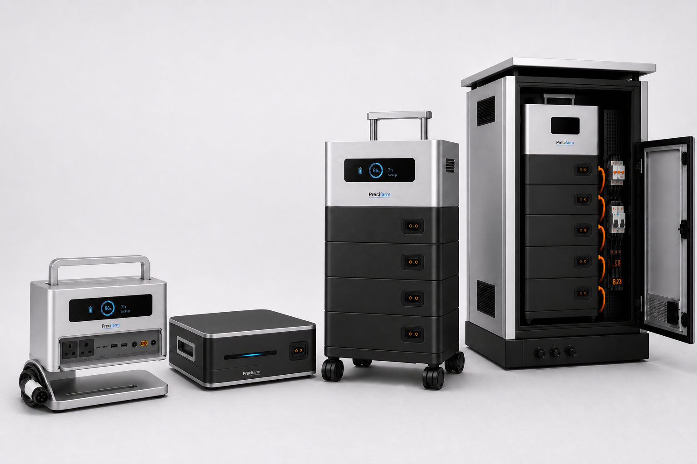
Engineering targets and conceptual designs shown in this document are subject to prototype validation, supplier qualification, third-party testing, certification and applicable Kenyan statutory requirements. This document is not an issued-for-construction drawing, certified product specification, warranty or installation manual.
Contents
- 01THE ENERGY PLATFORM
- 02PRODUCT FAMILY
- 03ENERGY MODULE
- 04P1 GO
- 05P2 HOME
- 06POWER CORE
- 07PRECIFARM POD
- 08SYSTEM ARCHITECTURE
- 09ELECTRICAL ARCHITECTURE
- 10BATTERY + BMS
- 11THERMAL DESIGN
- 12SAFETY
- 13ENERGY OS
- 14SOLAR + HOME
- 15EV + V2X
- 16SIZING + ENGINEERING MATH
- 17KENYA DESIGN CONDITIONS
- 18TESLA + BYD BENCHMARK
- 19COMPETITIVE LANDSCAPE
- 20MANUFACTURING
- 21SERVICEABILITY
- 22PAYGO + M-PESA
- 23TEST + VALIDATION
- 24PROTOTYPE ROADMAP
- 25OPEN ENGINEERING DECISIONS
- 26POWER VERSUS ENERGY
- 27APPENDIX: CALCULATION REFERENCE
- 28RISK REGISTER
- 29NORTH STAR
- 30RESEARCH + DESIGN REFERENCES
List of Figures and Renders
Figures 1–8
- Figure 1Platform architecture: customer, Energy OS, edge, power conversion, energy modules, and the loads and sources they serve.
- Figure 2Product family progression with consistent industrial-design language from P1 Go to Pod.
- Figure 3Energy Module exploded view. All internal arrangements are CONCEPTUAL; dimensions and part counts are TBD pending prototype.
- Figure 4P1 Go cutaway. Conceptual internal arrangement.
- Figure 5P2 Home cutaway showing Power Core above, module bays below, ducted airflow and service access.
- Figure 6Electrical architecture: grid, PV, DC bus, module bus and load paths with protection points.
- Figure 7Pod cutaway: Power Unit, module rack, airflow path, service access, and site connections.
- Figure 8Communication architecture from cell-level BMS to customer surfaces.
Figures 9–16
- Figure 9Data architecture: device telemetry to customer action.
- Figure 10Thermal architecture: generation, conduction path, enclosure and ambient, with derating bands.
- Figure 11Safety stack and fault-response paths.
- Figure 12Energy OS capability model and device relationship.
- Figure 13Energy OS application screens: energy remaining, solar, consumption, health, expansion, PAYGO, EV, and future V2H.
- Figure 14Module scaling: energy grows linearly; in a parallel LV architecture, current grows with it.
- Figure 15Backup duration versus load for 1, 2, 4 and 8 modules. Theoretical, engineering estimate and expected usable are distinguished.
- Figure 16Solar sensitivity: PV generation versus daily load across day types, with battery SOC consequence.
Figures 17–24
- Figure 17Tesla / BYD / Precifarm architecture synthesis.
- Figure 18Manufacturing localisation roadmap from import to regional scale.
- Figure 19Service architecture: identification, diagnosis, module replacement and closure.
- Figure 20PAYGO and M-Pesa financial-energy architecture with policy boundary.
- Figure 21Prototype-to-scale roadmap with exit gates.
- Figure 22Energy versus power: tank and pipe, and the module/Power Core mapping.
- Figure 23The Precifarm energy network: generation, storage at three scales, Energy OS, and the loads and vehicles it serves.
- Figure 24Customer journey and ownership progression from unboxing a portable unit to moving energy between a vehicle and a home.
Renders 1–4
- Render 1The Precifarm product family: P1 Go, Energy Module, P2 Home and Pod. Conceptual industrial design; not a manufacturing model.
- Render 2Energy Module conceptual industrial design: recessed side handles, keyed blind-mate power and communication connectors, status indicator and identification tag.
- Render 3P1 Go on its home stand with raised top carry handle: aluminum unibody, fold-flat stainless bail handle, glass energy display, magnetic I/O bay, wireless pad, and coiled Type 2 emergency EV lead.
- Render 4P2 Home conceptual industrial design: Power Core above, four module bays below with two bays empty and their blind-mate connectors visible, retractable handle and rear castors.
Renders 5–8
- Render 5Precifarm Pod conceptual industrial design, service door open: Power Unit above, a rack of six identical Energy Modules, a separated protection section, sun-shield canopy and base cable entries.
- Render 6P2 Home installed in a modern Nairobi home utility area beside the consumer distribution board, with one spare Energy Module stored alongside.
- Render 7A Pod serving a small Kenyan retail and cold-storage business, wall-shaded, plinth-mounted, with rooftop PV above.
- Render 8Rooftop PV, a wall-shaded Pod and an EV charging in the carport of a Nairobi suburban home. Phase A: charging from the customer's own solar surplus.
HOW TO READ THIS DOCUMENT
Every substantive claim carries a label. Nothing in this document should be read as an approved product specification unless it is labelled and cross-referenced to a released data sheet — and no data sheet has been released.
| Label | Meaning |
|---|---|
| TARGET | Existing Precifarm design target carried forward from v1.0 |
| CALC | Engineering calculation performed in this document; math shown |
| ASSUMPTION | Engineering assumption; stated explicitly so it can be challenged |
| BENCHMARK | External market or competitor reference; cited in §28 |
| FUTURE | Future concept; no hardware, supplier or approval basis today |
| VALIDATE | Requires prototype or laboratory validation before it can be quoted |
| CERT | Requires certification, type approval or regulatory consent |
| CONCEPTUAL | Industrial-design or layout intent only; not a manufacturing model or dimensioned drawing |
| [ERN-nn] | Engineering Review Note — inconsistency or risk found in v1.0 |
Figures and renders are numbered separately. Figures (1–24) are engineering diagrams, charts and calculations. Renders (1–8) are conceptual industrial-design visualisations — they communicate design intent and installation context, and carry no dimensional authority.
Nine Engineering Review Notes (ERN-01 … ERN-09) are raised against v1.0 and consolidated in §25. Three of them (ERN-01, ERN-03, ERN-06) are architecture-level and must be closed before prototype release.
EXECUTIVE SUMMARY
Precifarm is building one modular energy platform, not a catalogue of unrelated batteries. A single standardised Energy Module is the unit of capacity; a separate Power Core (or Pod Power Unit) is the unit of power. One cloud layer — Energy OS — and one customer account span every product.
Platform at a glance
| Metric | Value |
|---|---|
| Energy building block | 2.56 kWh · 51.2 V · 50 Ah LiFePO₄ module TARGET |
| Usable AC energy (1 module) | 2.17 kWh per module; 1.68 kWh daily cycling AC CALC |
| Physical forms | P1 Go (~1 kWh) → P2 Home (1–4 modules) → Pod (2–20 modules) |
| Software | One Energy OS account across every product |
| Kenya basis | 230 V / 50 Hz · 4.7 PSH design · KSh 20–28/kWh grid BENCHMARK |
| Blocking ERNs | ERN-01 inverter SKU · ERN-03 HV architecture · ERN-06 module handling |
| First lawful sale | P4 certification gate — no certification held today CERT |
ONE ENERGY PLATFORM. MANY SCALES. ONE ENERGY OS. ONE CUSTOMER ACCOUNT. PLUG → CARRY → ROLL → STACK → INSTALL → DRIVE P1 GO → P2 HOME → ENERGY MODULE → POD → SOLAR → HOME → BUSINESS → EV → V2X
Render 1 — Product family. One design language, one module, four scales. CONCEPTUAL — industrial-design intent only. Enclosure proportions, port arrangement, module count and internal layout are pre-prototype and subject to §24 validation.
What changed from v1.0
| No. | Change | Basis |
|---|---|---|
| 1 | Every number now shows its math. Energy, power, C-rate, runtime, usable energy, solar sizing and module count are derived, not asserted. | §16, §27 |
| 2 | P2 base SKU inverter rating corrected. v1.0 paired a 4 kW inverter with a single 2.56 kW module. Resolved by a two-tier SKU definition. | ERN-01 |
| 3 | Two-architecture battery topology introduced. 51.2 V parallel LV for ≤4 modules; series HV string for Pod ≥5 modules. v1.0's implied 20-module parallel bus would require ~1,000 A DC. | ERN-03, benchmarked to BYD HVS/Tesla PW3 |
| 4 | Module mass and handling flagged. A 2.56 kWh LFP module benchmarks at ~38 kg — above single-person lifting guidance. | ERN-06 |
| 5 | Third-party inverter interoperability added as a first-class requirement (CAN protocol emulation), not an afterthought. | ERN-08 |
| 6 | Usable energy formally defined with SOC window, reserve and conversion efficiency. v1.0 quoted nominal energy only. | ERN-09, §16.3 |
| 7 | Kenya design basis sourced. Solar yield, tariff, net-metering caps, KEBS standards and grid reliability now carry citations. | §17, §28 |
| 8 | PAYGO redesigned around consumer-protection evidence — essential-load floor instead of hard cutoff. | §22 |
| 9 | Competitive position stated as ADVANTAGE / PARITY / GAP / OPPORTUNITY, not marketing claims. | §19 |
| 10 | Test matrix, risk register and decision gates expanded to prototype-programme depth. | §23–§25 |
The five-minute version
- One module. 2.56 kWh LiFePO₄ at 51.2 V / 50 Ah TARGET — the only storage building block Precifarm designs.
- Energy and power scale separately. Adding modules adds kWh. Adding kW requires a larger Power Core. Conflating the two is the most common residential-storage sizing error (§26).
- Three physical forms. P1 Go carries ~1 kWh. P2 Home rolls and grows from 1 to 4 modules. Pod installs and scales from 2 modules to tens of kWh.
- One software layer. Energy OS owns monitoring, prediction, diagnostics, PAYGO and service — the defensible layer. Cells, power stages and connectors are bought.
- Kenya-first. 230 V / 50 Hz, ~4.7 peak-sun-hour worst-month design basis, KSh 20–28/kWh grid cost, 10 kW domestic net-metering cap, M-Pesa settlement, and a service model built to repair a module, not replace a system.
Tesla / BYD architectural synthesis and competitive positioning are developed in §18 and §19 — not repeated here.
01THE ENERGY PLATFORM
1.1 Design principle
1.2 Platform definition
Precifarm designs one energy platform that takes different physical forms as the customer's needs grow. The platform is defined by four invariants:
| Invariant | Definition | Why it matters |
|---|---|---|
| One Energy Module | 2.56 kWh LiFePO₄ class, common mechanical and electrical interface | One BOM, one spare part, one test fixture, one service procedure |
| Separated power | Conversion and control live in a Power Core / Power Unit, never in the module | Customer adds kWh without replacing electronics |
| One Energy OS | Same telemetry schema, same account, same app across P1 → Pod | Fleet learning, one support surface, one finance rail |
| One service model | Module-level replacement; system stays installed | Field economics in Kenya depend on repair, not swap-out |
1.3 Product ladder
Physical forms share the same module and software stack. Energy scales by adding modules; power scales by choosing the right Power Core / Pod inverter tier — not by replacing what the customer already owns.
| Form | Experience | Energy range | Role |
|---|---|---|---|
| P1 Go | Carry | ~1 kWh | Portable entry, off-grid light loads |
| P2 Home | Roll | 2.56 → 10.24 kWh | Modular home backup and solar self-consumption |
| Precifarm Pod | Install | 5.12 → 51.2 kWh | SME, multi-dwelling, fleet depot infrastructure |
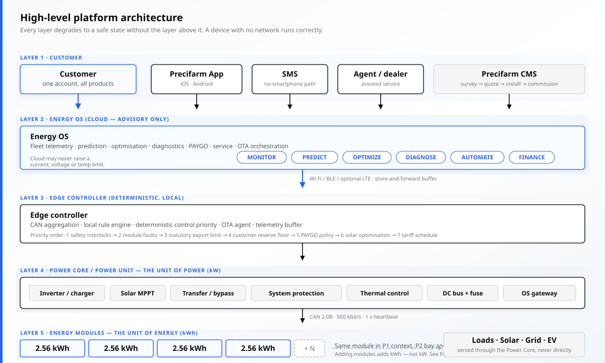
Figure 1 — Five layers from customer to field hardware. Every layer degrades safely without the layer above it; a device with no network connection runs correctly.
See §02 and Figure 2 for the full family definition and industrial-design progression.
02PRODUCT FAMILY
2.1 Family definition
| Product | Energy target | Power target | Experience | Primary role | Status |
|---|---|---|---|---|---|
| P1 Go | ~1.0 kWh TARGET | 1.0 kW TARGET | Carry | Portable energy, entry point | Concept |
| P2 Home | 2.56 → 10.24 kWh CALC | 2.4 / 4.8 kW SKU ERN-01 | Roll | Modular home energy | Concept |
| Energy Module | 2.56 kWh TARGET | 2.56 kW DC CALC | Stack | Common building block | Concept |
| Precifarm Pod | 5.12 → 51.2 kWh CALC | 5 → 30 kW TARGET | Install | Installed infrastructure | Concept |
| EV interface | Vehicle-dependent | Vehicle-dependent | Drive | Mobile energy resource | FUTURE |
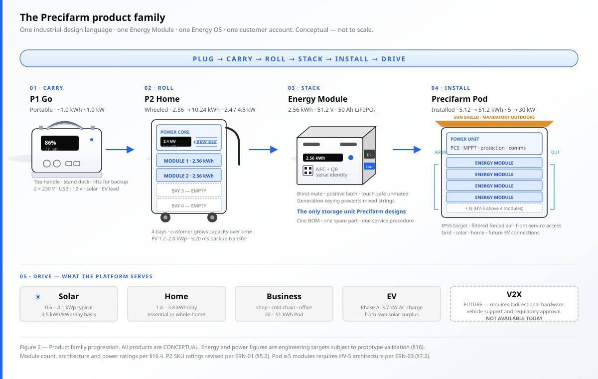
2.2 Entry and growth path
The commercial principle is buy what you need today, add capability when your life changes. The engineering requirement that makes this possible is that no expansion step strands a prior purchase:
| Step | Customer action | What is preserved |
|---|---|---|
| P1 Go → P2 Home | Buys P2; keeps P1 as portable/backup | Energy OS account, app, service history |
| P2 base → P2 + modules | Adds Energy Modules to empty bays | Power Core, enclosure, install, warranty base |
| P2 → Pod | Pod installed; P2 becomes mobile/secondary | Modules may transfer if architecture matches VALIDATE |
| Pod → Pod + EV | Adds EV charging circuit | Entire Pod, all modules, all software |
ERN-05 (open): whether Energy Modules physically transfer between a 51.2 V P2 and a high-voltage Pod string depends on decision E-03 (§25). If Pod moves to a series HV architecture, module cells and enclosure can be common but the BMS configuration and connector keying will differ. Do not market cross-product module transfer until E-03 closes.
2.3 Customer journey
The family exists to support a nine-step ownership progression. The defining commercial property is that a customer may stop at any step and still own a complete, working product — and the defining engineering constraint is that no later step strands an earlier purchase.
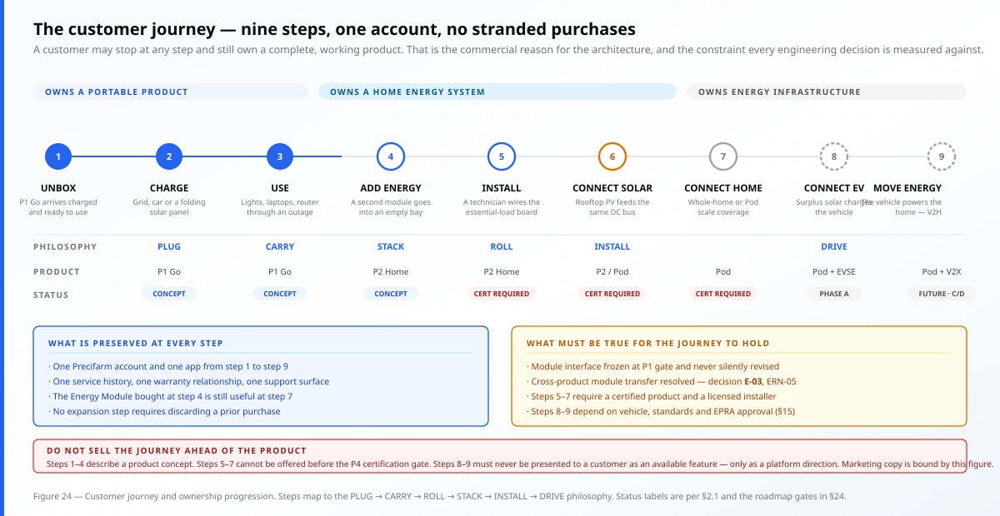
| Step | Customer experience | Product | Philosophy | Status |
|---|---|---|---|---|
| 1 · Unbox | Arrives charged and usable within minutes | P1 Go | PLUG | Concept |
| 2 · Charge | Grid, vehicle 12 V, or folding solar panel | P1 Go | PLUG | Concept |
| 3 · Use | Lights, laptops, router and phones through an outage | P1 Go | CARRY | Concept |
| 4 · Add energy | A second Energy Module goes into an empty bay | P2 Home | STACK | Concept |
| 5 · Install | Technician wires the essential-load distribution board | P2 Home | ROLL | CERT |
| 6 · Connect solar | Rooftop PV feeds the same DC bus | P2 / Pod | INSTALL | CERT |
| 7 · Connect home | Whole-home or SME-scale coverage | Pod | INSTALL | CERT |
| 8 · Connect EV | Surplus solar charges the vehicle | Pod + EVSE | DRIVE | FUTURE Phase A |
| 9 · Move energy | The vehicle powers the home | Pod + V2X | DRIVE | FUTURE Phase C/D |
Commercial discipline required. Steps 1–4 describe a product concept under development. Steps 5–7 cannot be offered commercially before the P4 certification gate (§24). Steps 8–9 must never be presented to a customer as an available feature — only as a platform direction with the dependencies stated in §15. All customer-facing material is bound by this table.
03ENERGY MODULE
3.1 Role
The Energy Module is the only storage unit Precifarm designs. Everything else is a container for modules plus the electronics required to convert and control their energy.
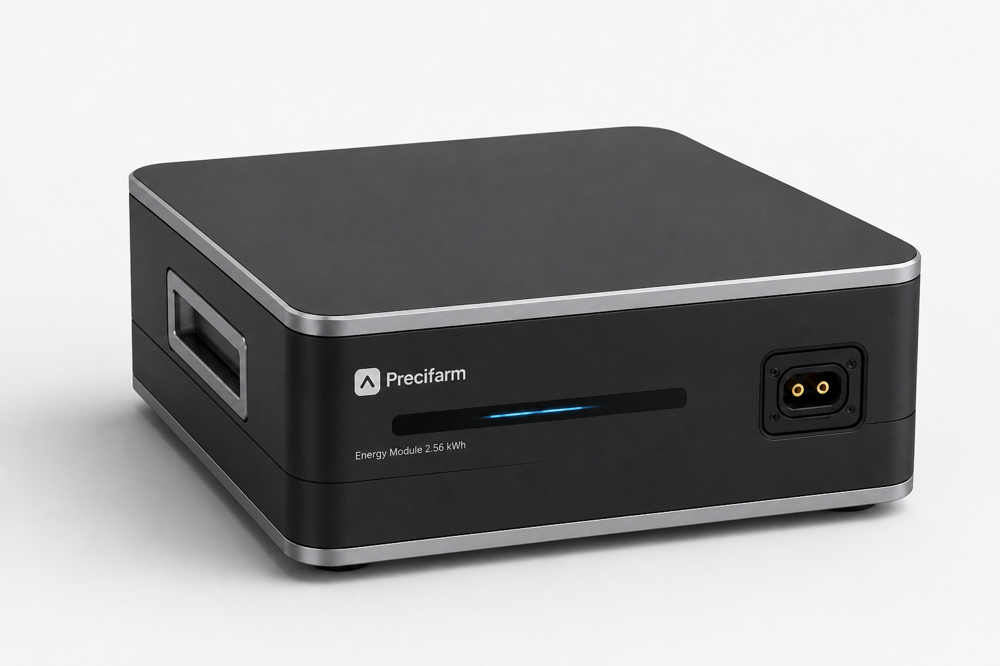
Render 2 — Energy Module. CONCEPTUAL The visible features carry engineering intent — two recessed handles (ERN-06), a keyed touch-safe blind-mate power block separated from a four-pin communication connector, a single-line status indicator, and an NFC/QR identity tag. Dimensions, latch geometry and connector selection are VALIDATE.
3.2 Target specification
| Parameter | Value | Label |
|---|---|---|
| Nominal energy | 2.56 kWh | TARGET |
| Nominal voltage | 51.2 V (16s LiFePO₄) | TARGET |
| Nominal capacity | 50 Ah | TARGET |
| Chemistry | LiFePO₄ (LFP), cobalt-free | TARGET |
| Operating voltage window | 44.8 – 58.4 V | TARGET |
| Max continuous discharge current | 50 A (1.0 C) | TARGET |
| Max continuous charge current | 30 A (0.6 C) | TARGET |
| Peak discharge current | 100 A / 10 s | VALIDATE |
| Operating temperature | −5 °C to +50 °C, derated above 40 °C | ASSUMPTION, ERN-07 |
| Cycle life target | ≥ 4,000 cycles to 80 % SOH @ 25 °C, 0.5 C | VALIDATE |
| Enclosure rating | IP20 (P2 indoor bay) / IP55 (Pod rack) | CERT |
| Communication | CAN 2.0B, 500 kbit/s + RS-485 fallback | TARGET, revised — ERN-08 |
| Mass | ≤ 30 kg target; benchmark class ~38 kg | ERN-06 |
3.3 The two derivations that matter
Energy.
E = V × Ah E = 51.2 V × 50 Ah E = 2,560 Wh E = 2.56 kWh [CALC — confirms TARGET]
Maximum continuous DC power.
P = V × I P = 51.2 V × 50 A P = 2,560 W P = 2.56 kW [CALC]
ERN-02: v1.0 stated this figure as "≈ 2.5 kW". The arithmetic result is 2.56 kW. The discrepancy is immaterial to design but must not propagate into data sheets, where 2.56 kW nominal / de-rated values shall be quoted explicitly.
C-rates.
C_discharge = I / Ah = 50 A / 50 Ah = 1.00 C [CALC] C_charge = I / Ah = 30 A / 50 Ah = 0.60 C [CALC]
A 1.0 C continuous discharge on prismatic LFP is achievable but is thermally the binding constraint in Kenyan ambient conditions (§11). Cell selection must be qualified at 1.0 C and 40 °C ambient, not only at the 0.2 C / 25 °C conditions typical of published datasheets VALIDATE.
3.4 Exploded architecture
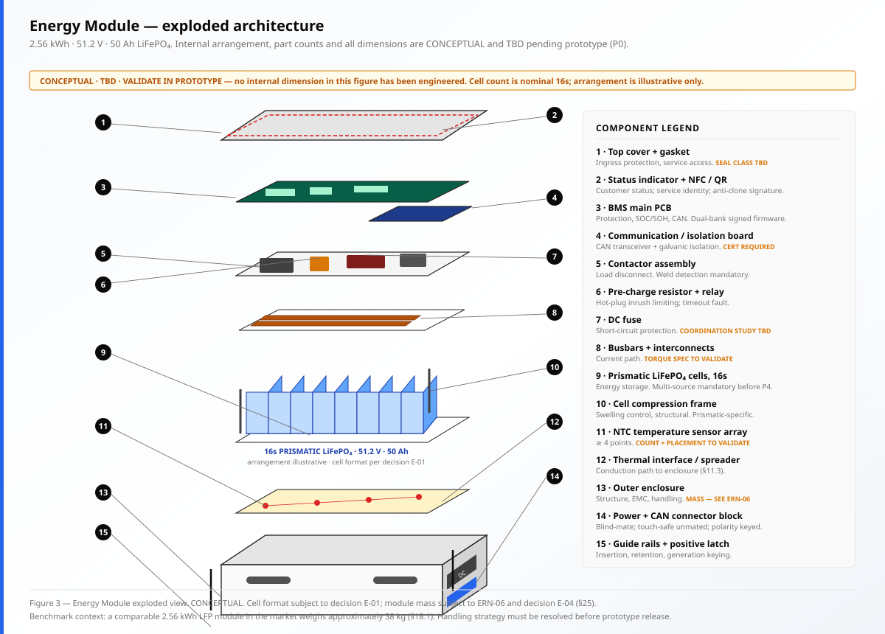
| No. | Component | Function | Buy / Customize / Own | Note |
|---|---|---|---|---|
| 1 | Top cover + gasket | Ingress protection, service access | Customize | Sealing class per §10 |
| 2 | Status indicator + NFC/QR tag | Customer status, service identity | Buy + Own (schema) | Anti-clone signature |
| 3 | BMS main PCB | Protection, SOC/SOH, CAN | Buy (platform) + Own (firmware) | Dual-bank firmware |
| 4 | Communication / isolation board | CAN transceiver, galvanic isolation | Buy | CERT |
| 5 | Contactor / relay assembly | Load disconnect | Buy | Weld detect required |
| 6 | Pre-charge resistor + relay | Hot-plug inrush limiting | Buy | Timeout fault |
| 7 | DC fuse | Short-circuit protection | Buy | Coordination study VALIDATE |
| 8 | Busbars + interconnects | Current path | Customize | Torque spec VALIDATE |
| 9 | Prismatic LFP cells (16s) | Energy storage | Buy | Multi-source required |
| 10 | Cell compression frame | Swelling control, structural | Customize | Prismatic-specific |
| 11 | NTC temperature sensor array | Thermal protection | Buy | ≥ 4 points VALIDATE |
| 12 | Thermal interface / spreader | Heat path to enclosure | Customize | §11 |
| 13 | Outer enclosure | Structure, EMC, handling | Customize | Handles per ERN-06 |
| 14 | Power + CAN connector block | Blind-mate interface | Buy (contacts) + Customize (housing) | Touch-safe unmated |
| 15 | Guide rails + positive latch | Insertion, retention, keying | Customize | Mis-insertion prevention |
3.5 Interface definition
| Interface | Requirement | Label |
|---|---|---|
| Mechanical | Guided blind-mate; single positive latch; generation keying prevents mixed-generation strings | TARGET |
| Electrical | Touch-safe when unmated; pre-charge before contactor close; reverse-polarity impossible by keying | TARGET |
| Communication | CAN 2.0B 500 kbit/s; address from serial; 1 s heartbeat | Revised ERN-08 |
| Identity | Factory UUID + NFC/QR; cryptographic module signature | TARGET |
| Thermal | ≥ 4 NTC points; conduction path to enclosure; forced-air compatible in Pod | VALIDATE |
| Service | Field-replaceable without disturbing other modules or de-energising the site | TARGET |
3.6 BMS functional requirements
| Function | Requirement | Label |
|---|---|---|
| Protection sampling | ≥ 10 Hz cell V, I, T | TARGET |
| Telemetry | 1 Hz internal, 1/60 Hz to cloud | TARGET |
| SOC | Coulomb counting + rest-OCV correction | TARGET |
| SOH | Capacity-fade model + cycle counter | VALIDATE |
| Protections | OV, UV, OC, SC, OT, UT, cell imbalance | CERT IEC 62619 |
| Contactor integrity | Weld detect; pre-charge timeout | TARGET |
| Balancing | Passive at top of charge; ≥ 100 mA | VALIDATE |
| Firmware | Dual-bank A/B, signed, rollback | TARGET |
| Interop | Emulate at least one widely supported third-party battery CAN profile | New — ERN-08 |
3.7 CAN object model (baseline)
| ID range | Content | Direction |
|---|---|---|
0x100–0x10F | Status: SOC, SOH, V, I, T_max, fault word | Module → Core |
0x110–0x11F | Limits: max charge / discharge current, temperature derate factor | Module → Core |
0x120–0x12F | Identity: serial, firmware, chemistry, cycle count | Module → Core |
0x200–0x20F | Commands: enable, current limit, clear fault, balance | Core → Module |
0x300–0x30F | Topology: bay/slot enumeration, string position | Bidirectional |
0x600+ | Third-party inverter emulation profile | Core → Inverter |
Full DBC to be released as PF-ENG-DBC-001 at P1 gate VALIDATE.
04P1 GO
4.1 Positioning
P1 Go is the entry point: a premium portable energy appliance, not a battery in a box. It is intentionally integrated — it does not accept the 2.56 kWh Energy Module in Phase 1. It shares Energy OS, brand language and customer account only.
Design direction [CONCEPTUAL]. P1 Go follows a lifestyle-appliance industrial-design language — closer to Apple HomePod / Mac Studio than to a toolbox generator. Research into premium portable power (Yoshino × fuseproject, Anker SOLIX) shows the category winning when products feel calm, portable and domestic rather than rugged and technical BENCHMARK. Precifarm's P1 therefore targets:
- Monolithic aluminum unibody with soft radii, no visible fasteners, glass-front status display
- Detachable tilt stand for home desk / bedside / carport use — cable routing, rubber feet, EV lead storage
- Top carry handle — wide fold-flat brushed stainless bail across the crown; stows flush in a top recess for desk mode, raises for one-hand outage carry
- One-hand carry — unit lifts off the stand by the top handle alone; no side grips
- Single magnetic I/O bay — Type G, USB-C/A, 12 V, solar in — fewer sealing faces than a scattered port layout
- Wireless top-up pad on the crown for phones TARGET
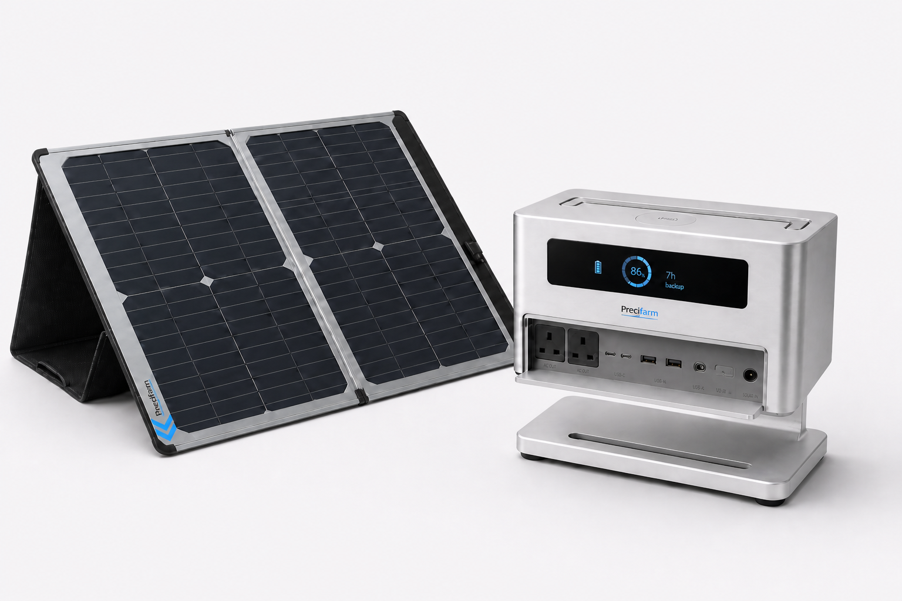
Render 3 — P1 Go. CONCEPTUAL The top handle folds flush into the crown for docked/home use and raises for carry — the customer lifts the brick off the stand by this handle during an outage. Stand is for home / carport docked mode. Outlet type shown is generic; production must be Type G for Kenya (§17).
4.2 Target specification
| Parameter | Target | Label | Benchmark |
|---|---|---|---|
| Energy | ~1.0 kWh LiFePO₄ | TARGET | EcoFlow DELTA 3 Plus 1,024 Wh BENCHMARK |
| Continuous AC output | 1.0 kW | TARGET | Class benchmark 1.8 kW BENCHMARK |
| Surge | 2.0 kW / 10 s | VALIDATE | Class benchmark 3.6 kW BENCHMARK |
| AC outlets | 2 × 230 V Type G | TARGET | Kenya socket standard |
| DC outputs | 2 × USB-C PD, 2 × USB-A, 1 × 12 V | TARGET | — |
| Vehicle 12 V input | Charge P1 from car/alternator while driving | TARGET | Customer journey step 2 BENCHMARK |
| EV emergency output | Portable Type 2 lead, 1.0 kW max (~5–7 km/h on a compact EV) | FUTURE accessory | Anker SOLIX EV port precedent BENCHMARK — honest trickle only at 1 kWh scale |
| Home stand | Tilt dock, cable channel, EV lead storage; unit lifts off by top handle | CONCEPTUAL | Enables carport/desk use without losing portability |
| Top carry handle | Fold-flat stainless bail across crown; stows flush, raises for carry | TARGET | Primary mobility interface — no side handles |
| Solar input | 100 – 200 W MPPT | TARGET | Class benchmark up to 1,000 W BENCHMARK |
| UPS / pass-through | ≤ 20 ms transfer | VALIDATE | Class benchmark 10 ms BENCHMARK |
| Mass | ≤ 12 kg | TARGET | Class 11.3 – 12.5 kg BENCHMARK — target is realistic |
| Cycle life | ≥ 3,000 cycles to 80 % | VALIDATE | Class 3,000 – 4,000 BENCHMARK |
| Certification | IEC 62368-1 appliance class; KS IEC 62619 cells | CERT | §10 |
Engineering position. The 1 kW / 1 kWh target is deliberately below the 1.8 kW class benchmark. This is a defensible choice only if it lowers landed cost meaningfully for the Kenyan entry segment. If it does not, P1 is under-specified against imported competitors and should move to 1.5 kW. Decision E-06, §25.
4.3 What P1 Go actually covers
Using the Scenario A essential-load profile (§16.5):
E_usable_AC(P1) = 1.00 kWh × 0.90 (SOC window) × 0.94 (conversion)
= 0.846 kWh [CALC]
Scenario A overnight demand = 1.10 kWh [CALC, §16.5]
Coverage = 0.846 / 1.10 = 77 % [CALC]
Honest statement for customer-facing copy: P1 Go covers a full evening of lights, router, phones and a fan, or most of a night including television. It does not run a refrigerator overnight. That requires P2 Home.
EV charging — what P1 can and cannot do.
Charge P1 FROM vehicle (12 V input): supported [TARGET] — mobile top-up while driving
Charge EV FROM P1 (Type 2 emergency): 1.0 kW max [FUTURE] — ~5–7 km range per hour on a
compact AC EV; NOT a substitute for Pod + EVSE (§15)
At 1.0 kWh / 1.0 kW, P1 is an emergency bridge, not a daily EV charger. Marketing must never imply parity with a 7 kW wallbox or a Pod installation.
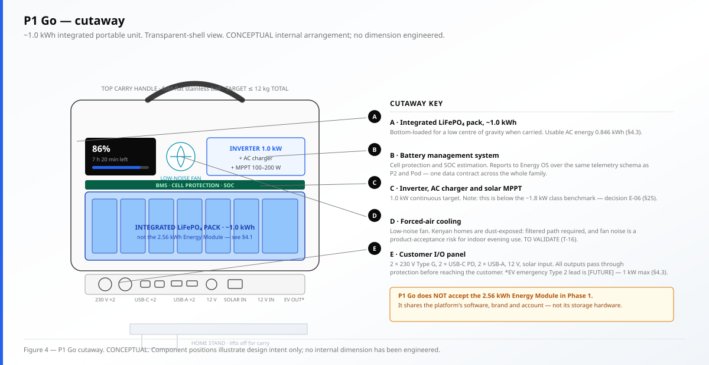
05P2 HOME
5.1 Positioning
P2 Home is the hero product and the bridge from portable power to installed infrastructure: a wheeled, expandable home energy appliance.
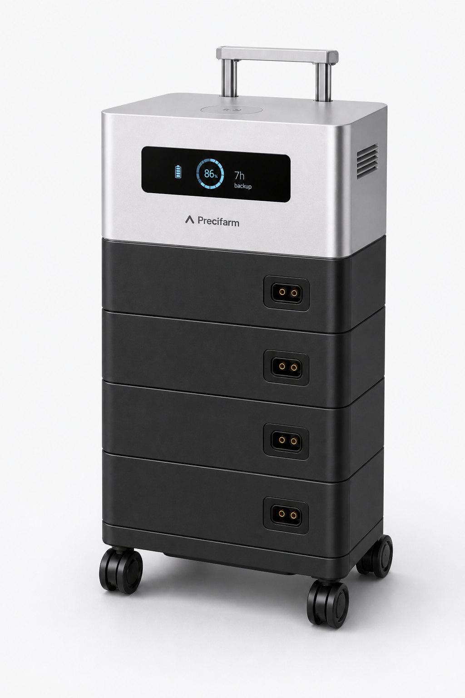
Render 4 — P2 Home. CONCEPTUAL The render shows the platform argument directly: the white upper section is the Power Core (power and control), the graphite sections below are Energy Module bays, and the two empty bays are the growth path — the customer buys kWh later without replacing electronics. Two modules are shown fitted, matching the P2-2.4 entry SKU (§5.2). Wheel size, handle mechanism and bay retention are VALIDATE.
5.2 ERN-01 — the v1.0 inverter/module mismatch
Finding. v1.0 specified a P2 base SKU with a 4 kW continuous inverter and one 2.56 kWh module.
DC current required for 4 kW AC output: I_DC = P_AC / (η_inv × V_nom) I_DC = 4,000 W / (0.94 × 51.2 V) I_DC = 4,000 / 48.13 I_DC = 83.1 A [CALC] C-rate demanded of a single module: C = 83.1 A / 50 Ah = 1.66 C [CALC] Module continuous limit = 1.00 C (50 A) [TARGET]
Conclusion. A single Energy Module cannot support a 4 kW continuous AC output. v1.0 is internally inconsistent.
Resolution — two-tier SKU definition [PROPOSED]:
| SKU | Modules | Max AC continuous | Derivation | Surge |
|---|---|---|---|---|
| P2-2.4 | 1 (2.56 kWh) | 2.4 kW | 50 A × 51.2 V × 0.94 = 2.41 kW CALC | 4.0 kW / 10 s VALIDATE |
| P2-4.8 | 2 (5.12 kWh) min | 4.8 kW | 100 A × 51.2 V × 0.94 = 4.81 kW CALC | 7.0 kW / 10 s VALIDATE |
The P2-4.8 Power Core may be installed with one module, but firmware shall limit continuous output to 2.4 kW until a second module is enumerated. This is an Energy OS rule, not a hardware change — capability follows installed capacity.
5.3 Target specification (revised)
| Parameter | P2-2.4 | P2-4.8 | Label |
|---|---|---|---|
| Base energy | 2.56 kWh | 5.12 kWh | CALC |
| Max energy | 10.24 kWh (4 modules) | 10.24 kWh (4 modules) | CALC |
| Continuous AC | 2.4 kW | 4.8 kW | CALC revised |
| PV input | 1.2 kWp, 1 MPPT | 2.0 kWp, 1 MPPT | TARGET |
| Grid | 230 V / 50 Hz single-phase | 230 V / 50 Hz | Kenya CERT |
| Backup transfer | ≤ 20 ms | ≤ 20 ms | VALIDATE |
| Module bays | 4 | 4 | TARGET |
| Enclosure | IP21 indoor | IP21 indoor | CERT |
| Mobility | 2 wheels + pull handle | 2 wheels + pull handle | TARGET |
5.4 ERN-04 — PV input versus module charge acceptance
Module max charge power = 51.2 V × 30 A = 1,536 W ≈ 1.54 kW [CALC] P2-2.4 PV input target = 1.2 kWp → 1.2 kW < 1.54 kW ✓ compatible P2-4.8 PV input target = 2.0 kWp with 1 module = 2.0 kW > 1.54 kW ✗
Resolution. With a single module installed, Energy OS shall clamp battery charge current to 30 A and divert surplus PV to load or curtail via MPPT. Surplus export requires net-metering consent (§17.4). With two modules, charge acceptance is 3.07 kW CALC and 2.0 kWp is comfortably supported.
5.5 Cutaway
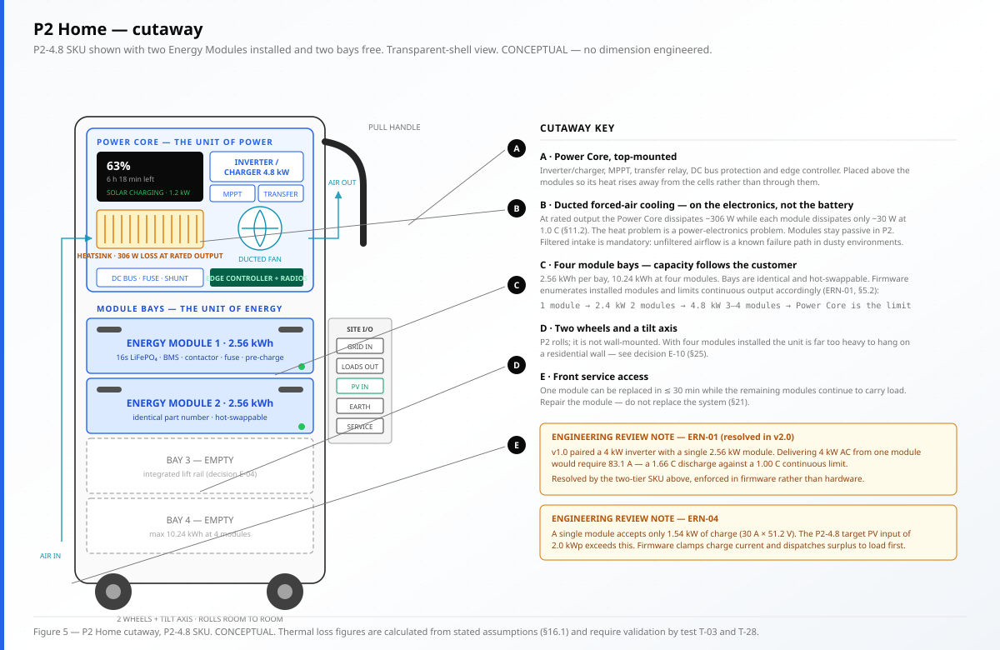
5.6 ERN-06 — module handling mass
BYD's 2.56 kWh Battery-Box HVS module weighs 38 kg BENCHMARK. A Precifarm module of equal chemistry and energy will land in a similar range.
| Reference | Value |
|---|---|
| Benchmark 2.56 kWh LFP module mass | ~38 kg BENCHMARK |
| Common single-person occasional lifting guidance | ~23–25 kg ASSUMPTION |
| Precifarm target | ≤ 30 kg TARGET, still above single-person guidance |
Required design response — choose one, at decision E-04 (§25):
| Option | Consequence |
|---|---|
| A Two-person handling, documented; module retains 2.56 kWh | Simplest; constrains "customer adds energy" marketing to technician-assisted |
| B Sub-divide to 1.28 kWh half-modules | Single-person handling; doubles connector count, BMS count and cost per kWh |
| C Mechanical aid — integrated slide/lift rail in P2 and Pod bays | Preserves 2.56 kWh and single-technician install; adds enclosure cost |
Recommendation: Option C for P2/Pod bays, Option A for transport. Marketing must not depict unassisted lifting until E-04 closes.
06POWER CORE
6.1 Principle
The Power Core contains everything that converts, controls and protects energy. The Energy Module contains only energy. This separation is the platform's most important architectural decision.
External validation [BENCHMARK]: Tesla's Powerwall 3 Expansion unit is explicitly battery-only and relies on the leader unit's inverter, allowing capacity to scale to 54 kWh across one inverter. BYD's Battery-Box towers similarly require an external or top-mounted control unit and a compatible third-party inverter.
6.2 Content split
| Power Core (power + control) | Energy Module (energy only) |
|---|---|
| Bidirectional inverter / charger | LiFePO₄ cells |
| Solar MPPT | Cell-level BMS |
| AC input, bypass, transfer relay | Temperature sensing |
| System protection, RCD interface | SOC / SOH estimation |
| Edge controller, radios | CAN interface |
| Energy OS gateway, OTA agent | Contactor + fuse + pre-charge |
| Thermal management (forced air) | Mechanical / electrical interface |
6.3 Block architecture
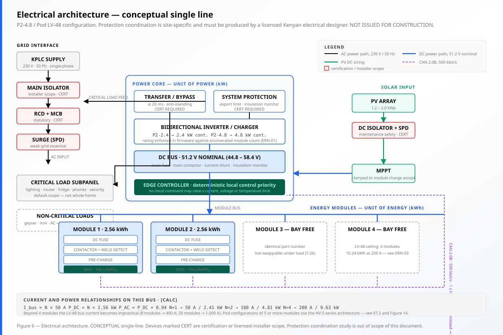
6.4 Deterministic control priority (edge, local)
Cloud is advisory only. The edge controller executes this order without network access:
| Rank | Rule | Overridable by cloud? |
|---|---|---|
| 1 | Safety interlocks, E-stop, insulation and thermal faults | No |
| 2 | Module fault aggregation → derate or shut down | No |
| 3 | Statutory export / import limit | No CERT |
| 4 | Customer backup reserve floor (default 20 % SOC) | Customer only |
| 5 | PAYGO essential-load policy (§22) | Signed service token only |
| 6 | Solar self-consumption optimisation | Yes |
| 7 | Tariff / time-of-use schedule | Yes |
Design rule: no cloud command may raise a current, voltage or temperature limit. Cloud may only request operation within limits already asserted locally.
07PRECIFARM POD
7.1 Positioning
The Pod applies BYD's repeat-the-block philosophy at building scale: a professionally installed cabinet containing a Power Unit and N Energy Modules.
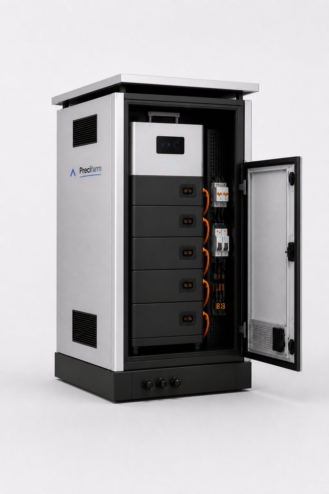
Render 5 — Precifarm Pod. CONCEPTUAL Four engineering intentions are visible: the sun-shield canopy standing proud of the roof (§11 — it exists to keep direct solar gain off the enclosure skin), module repetition with even service clearance, a physically separated protection section so a technician can isolate before touching modules, and segregated base cable entries for PV, grid and load. Six modules are shown; module count depends on decision E-03 (§7.2). Enclosure IP rating is CERT.
7.2 ERN-03 — the 51.2 V parallel scaling limit
Finding. v1.0 described a "Pod Array" of 10–51+ kWh while retaining a 51.2 V nominal architecture. At 51.2 V, capacity can only grow by paralleling modules, and current grows linearly.
Parallel LV architecture at 51.2 V nominal: N modules → I_max = N × 50 A, P_max = N × 2.56 kW N = 4 → 200 A → 10.24 kW practical N = 8 → 400 A → 20.48 kW busbar/fuse cost rising steeply N = 20 → 1,000 A → 51.20 kW NOT ACCEPTABLE for this product class [CALC]
A ~1,000 A DC bus in a residential or SME cabinet implies very large conductors, expensive high-breaking-capacity fusing, significant I²R loss and a difficult arc-flash case. Neither benchmark competitor does this. BYD scales the same 2.56 kWh module in series to 512 V while holding output current at 25 A per tower BENCHMARK.
Resolution — dual architecture [PROPOSED], decision E-03 (§25):
| Architecture | Application | Topology | DC voltage | Current at max | Label |
|---|---|---|---|---|---|
| LV-48 | P1, P2, Pod ≤ 4 modules | Parallel modules | 51.2 V nominal | ≤ 200 A | PROPOSED |
| HV-S | Pod ≥ 5 modules | Series string, optional parallel strings | 256 – 512 V nominal | ≤ 100 A | PROPOSED |
HV-S worked example:
10 modules in series: V = 10 × 51.2 V = 512 V Ah = 50 Ah (unchanged in series) E = 512 V × 50 Ah = 25,600 Wh = 25.6 kWh I_max = 50 A → P = 512 × 50 = 25.6 kW [CALC] 51.2 kWh via 2 parallel strings of 10 series: V = 512 V, Ah = 100 Ah, E = 51.2 kWh, I_max = 100 A [CALC]
Current falls from 1,000 A to 100 A for the same energy and power — a 10× reduction in conductor and protection duty.
Consequence: HV-S crosses into a higher electrical-safety class. Isolation, creepage/clearance, insulation monitoring, arc protection and installer competency all change. CERT — this must be scoped with a Kenyan certification consultant before Pod pilot (§24, P3 gate).
ERN-08 addendum: v1.0's "≥ 500 V DC isolation, module-to-chassis" is adequate for LV-48 but insufficient for a 512 V string. HV-S modules require isolation rated for the full string voltage plus margin, not the module voltage.
7.3 Pod configuration matrix
| Site class | Modules | Architecture | Energy | Usable AC | Power Unit target | Typical use |
|---|---|---|---|---|---|---|
| Home base | 2 | LV-48 | 5.12 kWh | 4.33 kWh | 4.5 kW | Backup + solar |
| Home premium | 4 | LV-48 | 10.24 kWh | 8.66 kWh | 8 kW | Solar + EV AC |
| SME small | 8 | HV-S | 20.48 kWh | 17.33 kWh | 15 kW | Shop, cold chain |
| SME large | 20 | HV-S (2×10) | 51.20 kWh | 43.32 kWh | 30 kW | Multi-tenant, EV |
Usable AC computed per §16.3. All Power Unit ratings TARGET, subject to §16.4 power-ceiling check.
ERN-09: v1.0 paired "Pod base 5.12 kWh" with a "5 kW" PCS. Two LV-48 modules deliver 4.81 kW AC CALC — the 5 kW figure is marginally unsupportable at continuous rating. Corrected to 4.5 kW continuous above, or specify 3 modules for a true 5 kW.
7.4 Cutaway
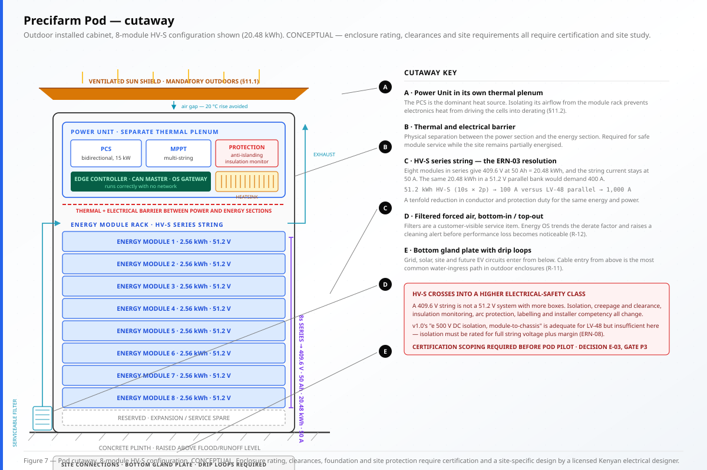
08SYSTEM ARCHITECTURE
8.1 Layered responsibility
| Layer | Owns | Fails how | Recovery |
|---|---|---|---|
| Energy Module | Cell limits, SOC/SOH, local disconnect | Opens contactor, raises fault on CAN | Service reset or auto after cause clears |
| Power Core / Unit | Conversion, grid interface, protection | Trips to safe state, preserves isolation | Auto-restart with backoff |
| Edge controller | CAN aggregation, local rules, OTA agent | Modules idle; grid pass-through if wired | Watchdog reboot |
| Energy OS | Fleet telemetry, UX, PAYGO, service | Device continues locally, buffers telemetry | Reconnect and backfill |
Invariant: every layer degrades to a safe state without the layer above it. A device with no network runs correctly.
8.2 Communication architecture
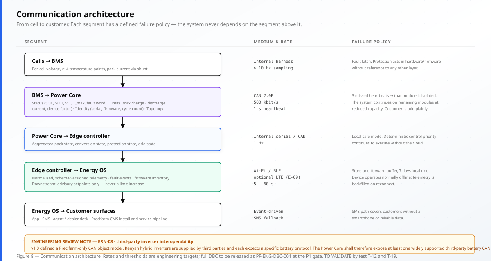
| Segment | Medium | Rate | Failure policy |
|---|---|---|---|
| Cell → BMS | Internal harness | ≥ 10 Hz | Fault latch |
| BMS → Power Core | CAN 2.0B | 500 kbit/s, 1 s heartbeat | 3 missed beats → isolate module |
| Power Core → Edge | Internal serial / CAN | 1 Hz | Local safe mode |
| Edge → Energy OS | Wi-Fi / BLE / optional LTE | 5 – 60 s | Store-and-forward buffer |
| Energy OS → Customer | App, SMS, agent desk, CMS | Event-driven | SMS fallback |
8.3 ERN-08 — third-party inverter interoperability
Finding. v1.0 defined a Precifarm-proprietary CAN object model only. In practice, the Kenyan market's hybrid inverters are supplied by third parties, and each expects a specific battery CAN protocol. A battery that speaks only its own dialect is commercially unusable outside Precifarm's own Power Core.
Requirement added: the Power Core shall expose, in addition to the native profile, at least one widely supported third-party battery CAN profile so Precifarm modules can be sold into installed third-party inverter bases. TARGET — target profile selection at decision E-07 (§25); compatibility list to be published as PF-ENG-INVCOMPAT-001 VALIDATE.
8.4 Data architecture
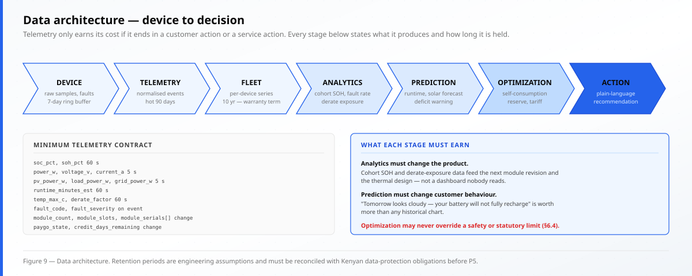
| Stage | Content | Retention ASSUMPTION |
|---|---|---|
| Device | Raw samples, faults, ring buffer | 7 days local |
| Telemetry ingest | Normalised events, schema-versioned | Hot 90 days |
| Fleet platform | Per-device time series, module registry | 10 years (warranty term) |
| Analytics | Cohort SOH, fault-rate, derate exposure | Aggregated indefinitely |
| Prediction | Runtime, solar forecast, capacity advice | Rolling |
| Customer action | Plain-language recommendation | Event log |
09ELECTRICAL ARCHITECTURE
9.1 Conceptual single-line (P2-4.8)
KPLC 230 V / 50 Hz
│
[ MAIN ISOLATOR ]
│
[ RCD + MCB ] ← statutory, installer scope [CERT]
│
[ SURGE PROTECTION ]
│
AC INPUT ──► [ BYPASS / TRANSFER RELAY ] ──► CRITICAL LOAD SUBPANEL
│ ▲
▼ │
[ BIDIRECTIONAL INVERTER / CHARGER ] ─────────────┘
│ DC 51.2 V bus
├──── [ PV MPPT ] ◄──── PV ARRAY (string isolator, DC SPD)
│
[ DC BUS PROTECTION: fuse, contactor, shunt, insulation monitor ]
│
MODULE BUS ── [ MOD 1 ] [ MOD 2 ] [ MOD 3 ] [ MOD 4 ]
each: BMS + pre-charge + contactor + fuse
9.2 Protection coordination targets
| Location | Device | Purpose | Label |
|---|---|---|---|
| Module internal | DC fuse | Cell-string short-circuit | VALIDATE |
| Module internal | Contactor + pre-charge | Controlled connect/disconnect | TARGET |
| DC bus | Main fuse + contactor | Bus fault isolation | VALIDATE |
| DC bus | Insulation monitor | Earth-fault detection | CERT |
| PV string | DC isolator + SPD | Maintenance safety, surge | CERT |
| AC input | RCD + MCB + SPD | Statutory installation | CERT installer scope |
| AC output | Transfer relay + anti-islanding | Grid safety in backup | CERT |
Protection coordination study is out of scope of this document and must be produced per-configuration by a licensed Kenyan electrical designer before any Pod installation.
9.3 Earthing and grid interface
| Item | Requirement | Label |
|---|---|---|
| Earthing | Per Kenyan installation requirements and site study | CERT |
| Anti-islanding | Required for any grid-parallel operation | CERT |
| Export | Only under net-metering consent; domestic systems capped at 10 kW | CERT — sourced §17.4 |
| Metering | Bi-directional smart meter with two-way communication required for net metering | CERT — sourced §17.4 |
| Default posture | Zero-export unless net-metering agreement in place | PROPOSED decision E-05 |
10BATTERY + BMS
10.1 Cell selection framework
| Criterion | Requirement | Weight |
|---|---|---|
| Chemistry | LiFePO₄, cobalt-free | Mandatory |
| Format | Prismatic preferred (see E-01, §25) | High |
| Qualification | 1.0 C continuous at 40 °C ambient VALIDATE | Mandatory |
| Cycle life | ≥ 4,000 to 80 % SOH VALIDATE | High |
| Multi-source | ≥ 2 qualified suppliers before P4 | Mandatory |
| Documentation | UN 38.3 test summary, IEC 62619 cell data | Mandatory CERT |
Benchmark context [BENCHMARK]: both benchmark modular systems in this class use cobalt-free LiFePO₄ and quote an operating range of −10 °C to +50 °C with round-trip efficiency ≥ 95–96 % at DC level.
10.2 Usable energy definition (ERN-09 closure)
v1.0 quoted nominal energy only. v2.0 defines three distinct figures which must never be interchanged:
| Figure | Definition | 1 module |
|---|---|---|
| Nominal energy | V × Ah | 2.56 kWh |
| Usable DC energy | Nominal × SOC window | 2.30 kWh |
| Usable AC energy | Usable DC × conversion efficiency | 2.17 kWh |
| Daily cycling AC energy | Nominal × (window − reserve) × conversion | 1.68 kWh |
Derivations in §16.3. Customer-facing material shall quote usable AC energy, not nominal.
10.3 Safety-relevant BMS states
| State | Trigger | Action |
|---|---|---|
| Normal | All parameters in band | Full capability |
| Derate | T > 40 °C or T < 5 °C, or cell imbalance rising | Reduce current limit; report factor |
| Warn | Approaching protection threshold | Notify Energy OS; log |
| Protect | Threshold exceeded | Open contactor; latch fault |
| Service lock | Repeated protect events, or integrity fault | Require technician clearance |
11THERMAL DESIGN
11.1 Why Kenya temperature matters
Kenya is not a single thermal environment. Nairobi's highland climate is mild; coastal and northern deployments are materially hotter, and any roof-adjacent or outdoor cabinet sees solar gain far above shade ambient.
| Location class | Shade ambient ASSUMPTION | Enclosure internal rise ASSUMPTION | Design worst case |
|---|---|---|---|
| Nairobi indoor | 18 – 28 °C | +5 °C | 33 °C |
| Nairobi outdoor, shaded | 12 – 30 °C | +8 °C | 38 °C |
| Outdoor, sun-exposed, no shield | 12 – 30 °C | +20 °C | 50 °C |
| Coastal / northern outdoor | up to 38 °C | +12 °C with shield | 50 °C |
Design conclusion: the platform must be qualified to 50 °C internal with defined derating, and outdoor Pods shall include a sun shield and ventilation path. ERN-07: v1.0's "operating 15–40 °C, derated at 45 °C" understates the sun-exposed case; revised to −5 to +50 °C with derating above 40 °C.
11.2 Heat generation
Module ohmic loss at maximum continuous discharge: P_loss = I² × R_internal Assume R_internal(module, 16s pack, incl. busbars) = 12 mΩ [ASSUMPTION — VALIDATE] P_loss = (50 A)² × 0.012 Ω P_loss = 2,500 × 0.012 P_loss = 30 W per module at 1.0 C [CALC] As fraction of delivered DC power: 30 / 2,560 = 1.17 % [CALC]
Power Core loss at rated output (P2-4.8): P_loss = P_out × (1/η − 1) η = 0.94 [ASSUMPTION] P_loss = 4,800 × (1/0.94 − 1) = 4,800 × 0.0638 = 306 W [CALC]
Engineering consequence: the Power Core, not the battery, is the dominant heat source at rated output. Forced-air cooling should be applied to the Power Core first; modules can remain passive in P2 [VALIDATE by thermal test].
11.3 Heat path
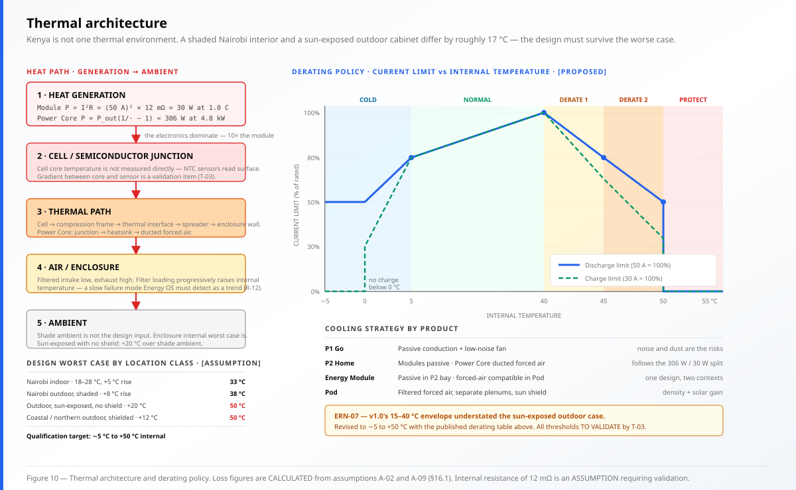
| Product | Module cooling | Electronics cooling | Rationale |
|---|---|---|---|
| P1 Go | Passive, enclosure conduction | Passive + optional low-noise fan | Dust and noise ingress risk in Kenyan homes |
| P2 Home | Passive in bay | Ducted forced air on Power Core | Follows §11.2 loss split |
| Energy Module | Passive in P2; forced-air compatible | — | One module design, two cooling contexts |
| Pod | Forced air through rack, filtered | Forced air, separate plenum | Higher density, outdoor |
11.4 Derating policy [PROPOSED]
| Internal temperature | Discharge current limit | Charge current limit | Customer message |
|---|---|---|---|
| 5 – 40 °C | 100 % (50 A) | 100 % (30 A) | Normal |
| 40 – 45 °C | 80 % (40 A) | 70 % (21 A) | "Working hard — output reduced slightly" |
| 45 – 50 °C | 50 % (25 A) | 40 % (12 A) | "Cooling down — reduced output" |
| > 50 °C | 0 % | 0 % | "Paused to protect your battery" |
| 0 – 5 °C | 80 % | 30 % | Charge limited (LFP low-temp) |
| < 0 °C | 50 % | 0 % | No charge below 0 °C |
All thresholds VALIDATE by cell-supplier data and thermal chamber test (§23, T-03).
12SAFETY
12.1 Safety stack
Safety is layered so that no single failure reaches the customer.
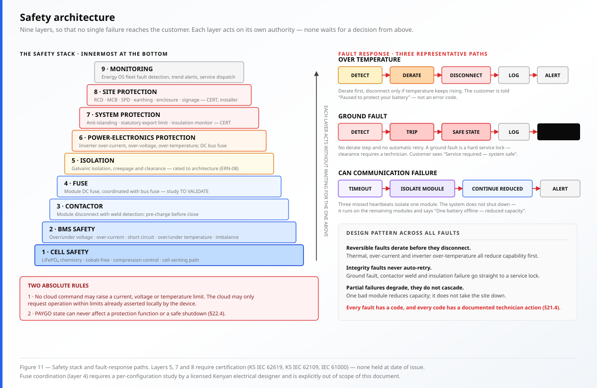
9 MONITORING Energy OS fleet fault detection, trend alerts 8 SITE PROTECTION RCD, MCB, SPD, earthing, enclosure, signage [CERT] 7 SYSTEM PROTECTION anti-islanding, export limit, insulation monitor [CERT] 6 POWER ELECTRONICS inverter OC/OV/OT, DC bus fuse, contactor 5 ISOLATION galvanic isolation, creepage/clearance [CERT] 4 FUSE module DC fuse, coordinated [VALIDATE] 3 CONTACTOR module disconnect + weld detect 2 BMS SAFETY OV UV OC SC OT UT, imbalance, latch 1 CELL SAFETY LiFePO₄ chemistry, compression, venting
12.2 Fault-response matrix
| Fault | Detection | Immediate | Then | Customer sees |
|---|---|---|---|---|
| Over-temperature | BMS NTC > threshold | Derate current | Open contactor if rising; log; alert | "Paused to protect your battery" |
| Over-current | BMS shunt | Limit, then open | Latch; retry with backoff | "Too much load — reduce and retry" |
| Cell over-voltage | BMS cell sense | Stop charge | Balance; log | "Battery full" |
| Cell under-voltage | BMS cell sense | Stop discharge | Reserve lock | "Battery empty — charging needed" |
| Ground fault | Insulation monitor / RCD | Trip to safe state | Lock out; service ticket | "Service required — system safe" |
| CAN heartbeat loss | 3 missed beats | Isolate that module | Continue on remaining modules | "One battery offline — reduced capacity" |
| Contactor weld | Voltage mismatch on open | Inhibit charge and discharge | Hard service lock | "Service required" |
| Pre-charge timeout | Timer + voltage delta | Abort connect | Retry ×3, then lock | "Battery not connecting" |
| Grid loss | AC sense | Transfer to backup ≤ 20 ms | Manage reserve | "Grid is off — running on battery" |
| Inverter over-temp | Heatsink NTC | Derate | Shut down if rising | "Output reduced — cooling" |
12.3 Certification path
| Domain | Standard | Kenya adoption | Status |
|---|---|---|---|
| Li-ion battery safety (industrial/stationary) | IEC 62619 | KS IEC 62619 BENCHMARK | CERT not started |
| Cell/battery transport | UN 38.3 | Required for import/export | CERT not started |
| PV inverter safety | IEC 62109-1/-2 | KS IEC 62109 BENCHMARK | CERT not started |
| PV module qualification / safety | IEC 61215 / 61730 | KS IEC 61215 / KS IEC 61730 BENCHMARK | Supplier scope |
| EMC | IEC 61000 series | Applicable | CERT not started |
| Appliance safety (P1 class) | IEC 62368-1 | Applicable | CERT not started |
| Off-grid solar home systems | KS 1800 (Kenya-specific) BENCHMARK | Applicable to P1-class kits | To assess |
| Installation | Kenyan installation requirements, licensed contractor | EPRA framework | Per-site CERT |
No Precifarm product holds any certification. Nothing in this document may be represented as certified.
13ENERGY OS
13.1 Six capabilities
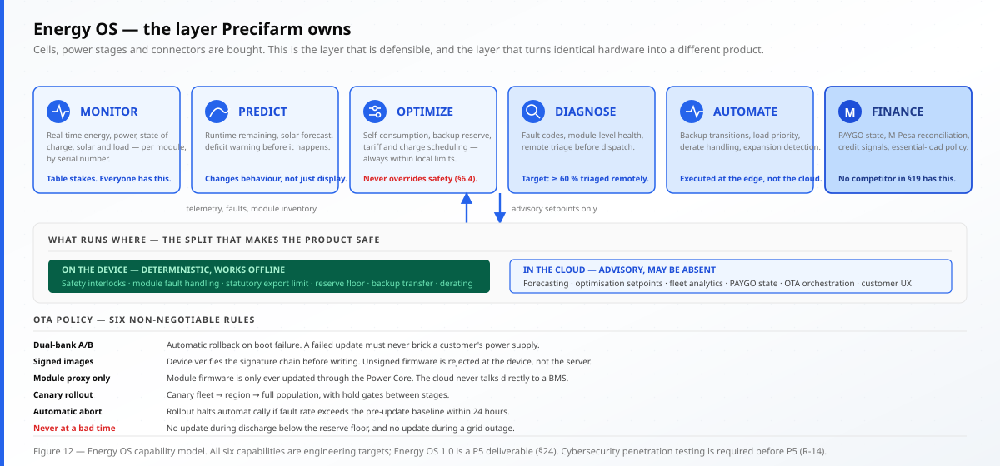
| Capability | What it does | Owned |
|---|---|---|
| Monitor | Real-time energy, power, SOC, solar, load | Own |
| Predict | Runtime remaining, solar forecast, deficit warning | Own |
| Optimize | Self-consumption, reserve, tariff, charge scheduling | Own |
| Diagnose | Fault codes, module-level health, remote triage | Own |
| Automate | Backup transitions, load priority, derate handling | Own |
| Finance | PAYGO state, M-Pesa reconciliation, credit signals | Own |
13.2 Telemetry contract (minimum)
| Field | Rate | Purpose |
|---|---|---|
soc_pct, soh_pct | 60 s | Customer UX, warranty |
power_w, voltage_v, current_a | 5 s | Monitoring, diagnostics |
pv_power_w, load_power_w, grid_power_w | 5 s | Energy flow display |
runtime_minutes_est | 60 s | Plain-language UX |
temp_max_c, derate_factor | 60 s | Thermal exposure analytics |
fault_code, fault_severity | On event | Service |
module_count, module_slots, module_serials[] | On change | Expansion detection, anti-theft |
paygo_state, credit_days_remaining | On change | Finance |
firmware_version[] | 24 h | OTA compliance |
13.3 OTA policy
| Rule | Requirement |
|---|---|
| Banks | Dual-bank A/B with automatic rollback on boot failure |
| Signing | All images signed; device verifies chain before write |
| Module updates | Only via Power Core proxy — never cloud-direct to a module |
| Rollout | Canary fleet → region → full, with hold gates |
| Abort | Automatic halt if fault rate exceeds baseline within 24 h |
| Safety | No OTA during discharge below reserve, or during grid outage |
13.4 Customer language
Energy OS translates engineering state into decisions. This is a product requirement, not styling.
| Engineering state | Customer surface |
|---|---|
soc = 63 % | 63 % battery · about 6 h 18 min left |
pv_power = 1.2 kW | Solar is powering your home and charging your battery |
module_count 2 → 3 | +2.56 kWh added · about 3 h more backup |
derate_factor = 0.8, temp 43 °C | Working hard — output reduced slightly to protect your battery |
paygo_state = grace, 2 days | 2 days left on your plan · pay by M-Pesa to continue |
v2h_active = true FUTURE | Your vehicle is helping power your home |
13.5 Application screens
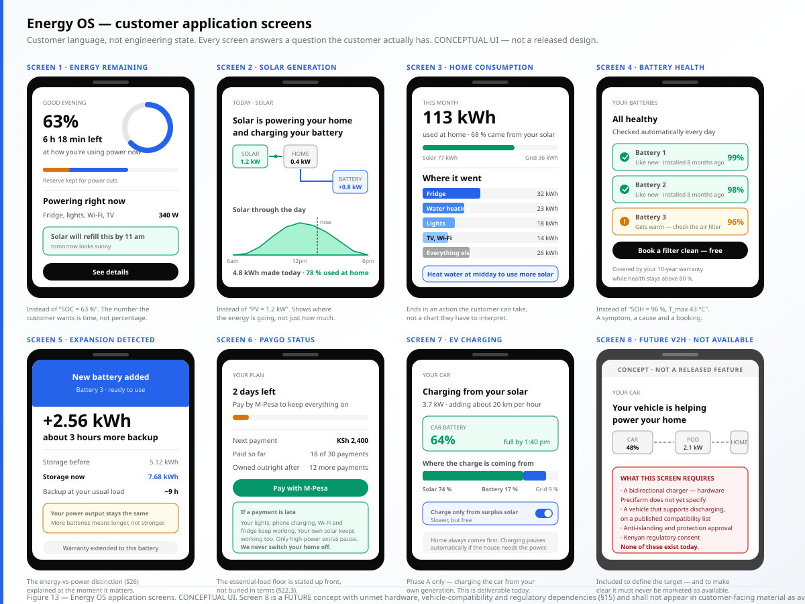
13.6 CMS integration
The existing Precifarm CMS install pipeline maps directly onto engineering gates:
| CMS stage | Engineering deliverable |
|---|---|
survey_requested | Load questionnaire, photos, meter details |
survey_scheduled | Site visit checklist, roof/space assessment |
quoted | Module count, Power Core SKU, PV size, single-line sketch |
deposit_paid | Procurement release, serial allocation |
install_scheduled | Install pack, protection schedule, licensed contractor assigned |
commissioned | Commissioning test sheet, Energy OS provisioning, warranty start |
14SOLAR + HOME
14.1 Solar role by product
| Product | Solar role | Input target |
|---|---|---|
| P1 Go | Portable panel top-up | 100 – 200 W |
| P2 Home | Rooftop self-consumption + storage | 1.2 – 2.0 kWp |
| Pod | Hybrid solar, storage, grid, EV | Site-sized |
14.2 Kenya solar design basis
| Parameter | Value | Label |
|---|---|---|
| Nairobi annual average peak sun hours | 5.5 PSH/day | BENCHMARK sourced |
| Nairobi worst-month PSH (Jun–Jul) | 4.5 PSH/day | BENCHMARK sourced |
| Nairobi recommended conservative design basis | 4.7 PSH/day | BENCHMARK sourced |
| Kisumu annual average / design basis | 5.0 / 4.0 PSH/day | BENCHMARK sourced |
| Measured specific yield, 600 kWp Nairobi rooftop | 1,225 kWh/kWp/year (PR 57.4 %) | BENCHMARK sourced |
| Precifarm planning performance ratio | 0.75 | ASSUMPTION |
| Precifarm effective daily yield basis | 3.5 kWh/kWp/day | CALC below |
Effective daily yield = PSH_design × PR
= 4.7 × 0.75
= 3.53 kWh/kWp/day
Adopted basis = 3.5 kWh/kWp/day [CALC]
Cross-check against measured Kenyan rooftop data:
1,225 kWh/kWp/year ÷ 365 = 3.36 kWh/kWp/day [CALC]
Engineering note. The measured Nairobi figure (3.36) is below the theoretical basis (3.53), driven by a low measured performance ratio of 57.4 % — consistent with soiling, temperature and system losses. The adopted 3.5 kWh/kWp/day is therefore optimistic relative to one real Kenyan installation. Sizing tools should offer a 3.0 kWh/kWp/day pessimistic case for dusty or poorly maintained sites ASSUMPTION.
14.3 Home integration
PV ARRAY
│ DC
[ MPPT ]
│
KPLC ─── [ TRANSFER ] ─── [ INVERTER/CHARGER ] ─── CRITICAL LOADS
│ │
│ DC BUS
│ │
NON-CRITICAL MODULES
LOADS
| Decision | Options | Note |
|---|---|---|
| Critical-load subpanel vs whole-home backup | Subpanel default | Whole-home requires transfer sized to full service CERT |
| Zero-export vs limited export | Zero-export default | Export requires net-metering consent (§17.4) |
| Generator interlock | Optional | Must never parallel with inverter output CERT |
15EV + V2X
15.1 Staged roadmap
Precifarm does not block V2X. It sequences it and refuses to market unavailable capability.
Render 8 — Solar, storage and EV charging. CONCEPTUAL This render depicts Phase A only — the vehicle is being charged from the customer's own generation and storage. It must never be captioned or presented as V2H or V2G: the energy in this image flows one way, into the vehicle. Bidirectional flow requires the hardware, vehicle and regulatory dependencies in §15.1.
| Phase | Capability | Hardware dependency | Vehicle dependency | Regulatory | Status |
|---|---|---|---|---|---|
| A | AC EV charging from PV/battery surplus | AC EVSE, load management | Any Type 2 AC-capable EV | Installation approval | Achievable near-term |
| B | EV state-of-charge visibility in Energy OS | None (API) | OEM API availability | Data consent | FUTURE |
| C | V2L / V2H — vehicle powers loads or home | Bidirectional charger | Vehicle must support bidirectional discharge | Anti-islanding, protection approval CERT | FUTURE |
| D | V2G — vehicle exports to grid | Bidirectional + grid interface | Vehicle + protocol support | Utility programme + EPRA approval must exist | FUTURE |
15.2 Non-negotiable communication rules
| Rule | Statement |
|---|---|
| No capability claim without hardware | V2H/V2L/V2G shall not appear in any customer-facing material as available |
| No capability claim without vehicle list | Any bidirectional claim requires a published compatible-vehicle list |
| No V2G without programme | V2G requires an actual utility programme and regulatory consent in Kenya |
| Phase A is the honest offer | "Charge your EV from your own solar" is deliverable and should be the marketed message |
15.3 Phase A sizing example
EV daily energy for 40 km: E_EV = 40 km × 0.18 kWh/km = 7.2 kWh/day [CALC, ASSUMPTION on 0.18] Single-phase AC charger at 16 A: P = 230 V × 16 A = 3,680 W ≈ 3.7 kW [CALC] Charging time from surplus: t = 7.2 kWh / 3.7 kW = 1.95 h [CALC]
A 3.7 kW EV charger plus a 2.6 kW home load requires a 6.3 kW Power Unit CALC — see Scenario C, §16.7.
16SIZING + ENGINEERING MATH
16.1 Assumption register
Every calculation in this document uses only these assumptions. Change one and the results change.
| ID | Assumption | Value | Basis |
|---|---|---|---|
| A-01 | Usable SOC window (LFP daily) | 90 % | ASSUMPTION |
| A-02 | Battery→AC one-way conversion efficiency | 94 % | ASSUMPTION |
| A-03 | Battery round-trip (AC→AC) efficiency | 90 % | ASSUMPTION; DC-level benchmarks quote ≥ 95–96 % BENCHMARK |
| A-04 | Backup reserve held (default) | 20 % SOC | ASSUMPTION, customer-configurable |
| A-05 | Nairobi design PSH | 4.7 PSH/day | BENCHMARK sourced |
| A-06 | Planning performance ratio | 0.75 | ASSUMPTION; measured Kenyan PR 57.4 % BENCHMARK |
| A-07 | Effective PV yield basis | 3.5 kWh/kWp/day | CALC from A-05, A-06 |
| A-08 | EV consumption | 0.18 kWh/km | ASSUMPTION |
| A-09 | Module internal resistance | 12 mΩ | [ASSUMPTION — VALIDATE] |
16.2 Core equations
| Quantity | Equation |
|---|---|
| Energy | E = V × Ah |
| Power | P = V × I |
| C-rate | C = I / Ah |
| Runtime | t = E_usable / P_load |
| Usable energy | E_usable = E_nominal × SOC_window × η_conversion |
| Module count | N = CEILING(E_required / E_module_effective) |
| Solar array | P_solar = E_daily / (yield × η_storage_path) |
| Ohmic loss | P_loss = I² × R |
16.3 Usable energy, derived
Nominal energy, one module: E_nom = 51.2 V × 50 Ah = 2,560 Wh = 2.56 kWh [CALC] Usable DC energy (A-01): E_DC = 2.56 kWh × 0.90 = 2.304 kWh [CALC] Usable AC energy (A-02): E_AC = 2.304 kWh × 0.94 = 2.166 kWh ≈ 2.17 kWh [CALC] Daily cycling AC energy, holding 20 % backup reserve (A-04): window = 0.90 − 0.20 = 0.70 E_cycle_AC = 2.56 kWh × 0.70 × 0.94 = 1.684 kWh ≈ 1.68 kWh [CALC]
These four numbers must be used consistently everywhere. Quoting 2.56 kWh where 1.68 kWh applies overstates daily capability by 52 %.
16.4 Module scaling — energy, current and power

LV-48 parallel architecture (51.2 V nominal)
| Modules | Nominal kWh | Usable AC kWh | Cycling AC kWh | Max DC current | Max DC kW | Max AC kW | Verdict |
|---|---|---|---|---|---|---|---|
| 1 | 2.56 | 2.17 | 1.68 | 50 A | 2.56 | 2.41 | OK |
| 2 | 5.12 | 4.33 | 3.36 | 100 A | 5.12 | 4.81 | OK |
| 3 | 7.68 | 6.50 | 5.04 | 150 A | 7.68 | 7.22 | OK |
| 4 | 10.24 | 8.66 | 6.72 | 200 A | 10.24 | 9.63 | LV practical ceiling |
| 8 | 20.48 | 17.33 | 13.44 | 400 A | 20.48 | 19.25 | Busbar/fuse cost severe |
| 10 | 25.60 | 21.66 | 16.80 | 500 A | 25.60 | 24.06 | Not recommended |
| 20 | 51.20 | 43.32 | 33.60 | 1,000 A | 51.20 | 48.13 | Not acceptable — ERN-03 |
All values CALC from §16.3 method. Max AC = Max DC × 0.94 (A-02).
HV-S series architecture (recommended for ≥ 5 modules)
| Configuration | Nominal V | Ah | kWh | Max current | Max DC kW | Note |
|---|---|---|---|---|---|---|
| 5 s | 256 V | 50 | 12.80 | 50 A | 12.80 | Entry HV |
| 8 s | 409.6 V | 50 | 20.48 | 50 A | 20.48 | SME small |
| 10 s | 512 V | 50 | 25.60 | 50 A | 25.60 | SME |
| 10 s × 2 p | 512 V | 100 | 51.20 | 100 A | 51.20 | 51.2 kWh at 100 A, not 1,000 A |
Current reduction for 51.2 kWh: LV-48 parallel: 1,000 A HV-S 10s×2p: 100 A Reduction factor: 10× [CALC]
HV-S requires a higher electrical-safety class [CERT]. See ERN-03 and decision E-03.
16.5 Kenya residential load calculations
Scenario A — Essential-load backup
| Load | Power (W) | Hours/day | Energy (Wh/day) |
|---|---|---|---|
| LED lighting, 8 × 9 W | 72 | 5 | 360 |
| Wi-Fi router | 10 | 24 | 240 |
| Phone charging, 2 × 10 W | 20 | 3 | 60 |
| Television, 32" LED | 50 | 4 | 200 |
| Fan | 45 | 4 | 180 |
| Security / gate controller standby | 15 | 24 | 360 |
| Total | — | — | 1,400 |
E_daily(A) = Σ(P × t) = 360+240+60+200+180+360 = 1,400 Wh = 1.40 kWh [CALC] Peak simultaneous ≈ 212 W; gate motor surge ≈ 400 W [CALC] Overnight portion (evening + night only) ≈ 1,100 Wh = 1.10 kWh [CALC]
Scenario B — Typical Kenyan urban home
| Load | Power (W) | Hours/day | Energy (Wh/day) |
|---|---|---|---|
| Scenario A subtotal | — | — | 1,400 |
| Refrigerator, 250 L (duty-cycle average) | 45 | 24 | 1,080 |
| Laptops, 2 × 45 W | 90 | 4 | 360 |
| Water pump, 0.75 kW | 750 | 0.5 | 375 |
| Kettle / microwave | 1,500 | 0.2 | 300 |
| Electric iron | 1,000 | 0.25 | 250 |
| Total | — | — | 3,765 |
E_daily(B) = 3,765 Wh = 3.77 kWh [CALC] Peak coincident ≈ 212 + 150 + 750 + 1,500 = 2.61 kW [CALC] Pump start surge (≈3×) → momentary ≈ 4.4 kW [CALC]
Scenario C — Solar + home + EV
| Load | Energy (Wh/day) |
|---|---|
| Scenario B total | 3,765 |
| EV, 40 km × 0.18 kWh/km (A-08) | 7,200 |
| Total | 10,965 |
E_daily(C) = 10,965 Wh ≈ 11.0 kWh [CALC] Peak: home 2.61 kW + EV 3.7 kW = 6.31 kW [CALC]
16.6 Battery, inverter and solar sizing per scenario
Module count: N = CEILING( E_required_AC / E_cycle_AC_per_module )
E_cycle_AC_per_module = 1.68 kWh (§16.3)
Solar array: P_solar = E_daily / (yield × η_storage_path)
yield = 3.5 kWh/kWp/day (A-07)
η_storage_path = 0.90 (A-03)
Scenario A
Backup use only — full 90 % window available, no daily cycling reserve: N = CEILING(1.10 kWh / 2.17 kWh) = CEILING(0.51) = 1 module [CALC] Autonomy = 2.17 / 1.10 = 1.97 nights [CALC] Inverter: 212 W continuous, 400 W surge → 1.0 kW class sufficient [CALC] Solar: P = 1.40 / (3.5 × 0.90) = 0.44 kWp → specify 0.6 kWp [CALC]
Product answer: P1 Go covers 77 % of one night (§4.3). P2-2.4 with one module covers ~2 nights with margin.
Scenario B
N = CEILING(3.77 kWh / 1.68 kWh) = CEILING(2.24) = 3 modules [CALC]
Installed energy = 3 × 2.56 = 7.68 kWh [CALC]
Cycling capacity = 3 × 1.68 = 5.04 kWh ≥ 3.77 kWh ✓ [CALC]
Reserve retained = 3 × 2.56 × 0.20 × 0.94 = 1.44 kWh AC backup [CALC]
Inverter: 2.61 kW continuous, 4.4 kW surge → P2-4.8 SKU [CALC]
Check power ceiling: 3 modules → 7.22 kW AC available ≥ 4.8 kW ✓ [CALC]
Solar: P = 3.77 / (3.5 × 0.90) = 1.20 kWp
specify 1.6 kWp (4 × 410 W) for soiling and worst-month margin [CALC]
Charge acceptance check: 3 × 1.54 kW = 4.6 kW > 1.6 kWp ✓ [CALC]
Scenario C
N = CEILING(10.965 kWh / 1.68 kWh) = CEILING(6.53) = 7 modules
→ specify 8 modules for rack symmetry = 20.48 kWh [CALC]
Architecture check: 8 modules → LV-48 would need 400 A
→ HV-S 8s (409.6 V, 50 A) recommended ERN-03, decision E-03
Power Unit: 6.31 kW continuous → 8 kW class [CALC]
Solar: P = 10.965 / (3.5 × 0.90) = 3.48 kWp
specify 4.1 kWp (10 × 410 W) [CALC]
Net-metering check: 4.1 kWp < 10 kW domestic cap ✓ [CERT] §17.4
16.7 Configuration summary
| Scenario A | Scenario B | Scenario C | |
|---|---|---|---|
| Daily energy | 1.40 kWh | 3.77 kWh | 11.0 kWh |
| Peak load | 0.21 kW (0.4 surge) | 2.61 kW (4.4 surge) | 6.31 kW |
| Modules | 1 | 3 | 8 |
| Installed energy | 2.56 kWh | 7.68 kWh | 20.48 kWh |
| Architecture | LV-48 | LV-48 | HV-S |
| Product | P1 Go or P2-2.4 | P2-4.8 | Pod |
| Power rating | 1.0 kW | 4.8 kW | 8 kW |
| Solar | 0.6 kWp | 1.6 kWp | 4.1 kWp |
16.8 Backup duration
t = E_usable_AC / P_load
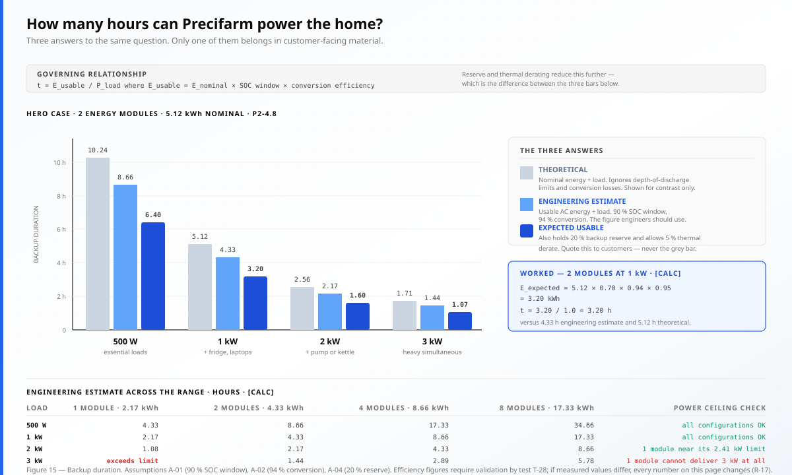
Theoretical (nominal energy ÷ load — overstates reality, shown for contrast only)
| Load | 1 mod (2.56) | 2 mod (5.12) | 4 mod (10.24) | 8 mod (20.48) |
|---|---|---|---|---|
| 500 W | 5.12 h | 10.24 h | 20.48 h | 40.96 h |
| 1 kW | 2.56 h | 5.12 h | 10.24 h | 20.48 h |
| 2 kW | 1.28 h | 2.56 h | 5.12 h | 10.24 h |
| 3 kW | — | 1.71 h | 3.41 h | 6.83 h |
Engineering estimate (usable AC energy ÷ load — the figure to use)
| Load | 1 mod (2.17) | 2 mod (4.33) | 4 mod (8.66) | 8 mod (17.33) |
|---|---|---|---|---|
| 500 W | 4.33 h | 8.66 h | 17.33 h | 34.66 h |
| 1 kW | 2.17 h | 4.33 h | 8.66 h | 17.33 h |
| 2 kW | 1.08 h | 2.17 h | 4.33 h | 8.66 h |
| 3 kW | exceeds 1-module limit (2.41 kW) | 1.44 h | 2.89 h | 5.78 h |
Expected usable — apply reserve and derating; assume 20 % reserve retained and 5 % thermal derate allowance:
Example, 2 modules at 1 kW load: E_expected = 5.12 kWh × 0.70 × 0.94 × 0.95 = 3.20 kWh [CALC] t = 3.20 / 1.0 = 3.20 h [CALC] versus engineering estimate 4.33 h, theoretical 5.12 h
Customer-facing rule: quote expected usable, never theoretical.
16.9 Solar sensitivity — Scenario B, 1.6 kWp
E_PV = P_array × PSH × PR
| Day type | PSH ASSUMPTION | PR | PV generation | Load 3.77 kWh | Result |
|---|---|---|---|---|---|
| Low solar (overcast, Jun–Jul) | 3.0 | 0.72 | 3.46 kWh CALC | 3.77 | Deficit 0.31 kWh → grid import or reserve draw |
| Typical (annual average) | 5.5 | 0.75 | 6.60 kWh CALC | 3.77 | Surplus 2.83 kWh → battery charge |
| High solar (dry season) | 6.5 | 0.75 | 7.80 kWh CALC | 3.77 | Surplus 4.03 kWh → charge then curtail/export |
| Dusty / unmaintained | 5.5 | 0.60 | 5.28 kWh CALC | 3.77 | Surplus 1.51 kWh — panel cleaning matters |
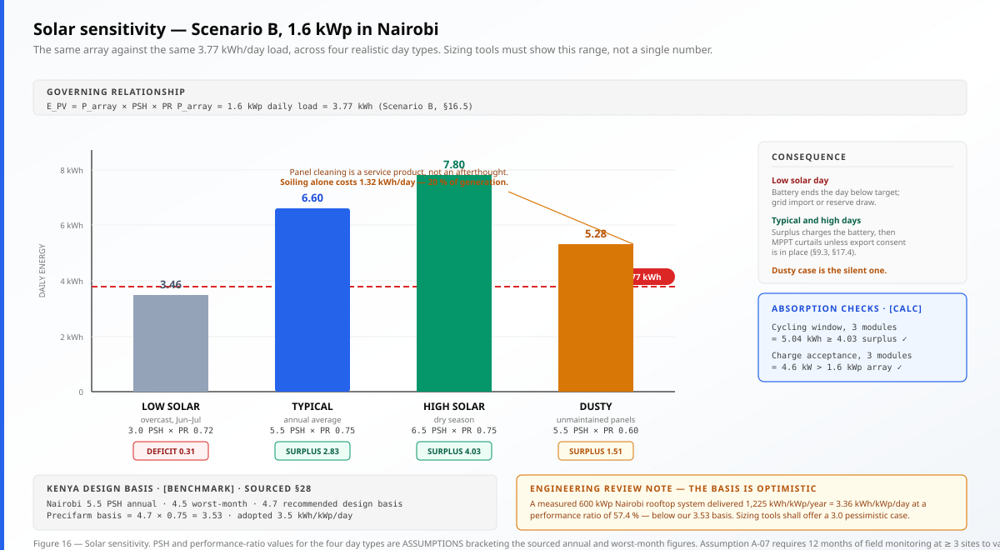
Surplus absorption check:
Cycling window, 3 modules = 5.04 kWh AC ≥ 4.03 kWh surplus ✓ [CALC] Charge acceptance, 3 modules = 4.6 kW > 1.6 kWp array ✓ [CALC]
16.10 Indicative avoided-cost calculation
CALC from sourced tariff data; not a financial projection.
Kenya domestic DC2 (>100 kWh/month) all-in estimate = KSh 28.46/kWh [BENCHMARK] Scenario B daily self-consumption = 3.77 kWh Daily avoided cost = 3.77 × 28.46 = KSh 107.3 [CALC] Monthly (30 d) = KSh 3,220 [CALC] Annual = KSh 39,160 [CALC]
Caveats: tariffs include monthly pass-through adjustments (KSh 4.70/kWh in August 2026 BENCHMARK) that change every month; households below 100 kWh/month sit on lower tiers; this ignores capital cost, financing, degradation and maintenance. Not an investment case.
17KENYA DESIGN CONDITIONS
17.1 Designed for African operating conditions
The design language must communicate: robust, simple, serviceable, affordable, modular, digital, premium. Not "rugged aid equipment" and not a European product with a different label.
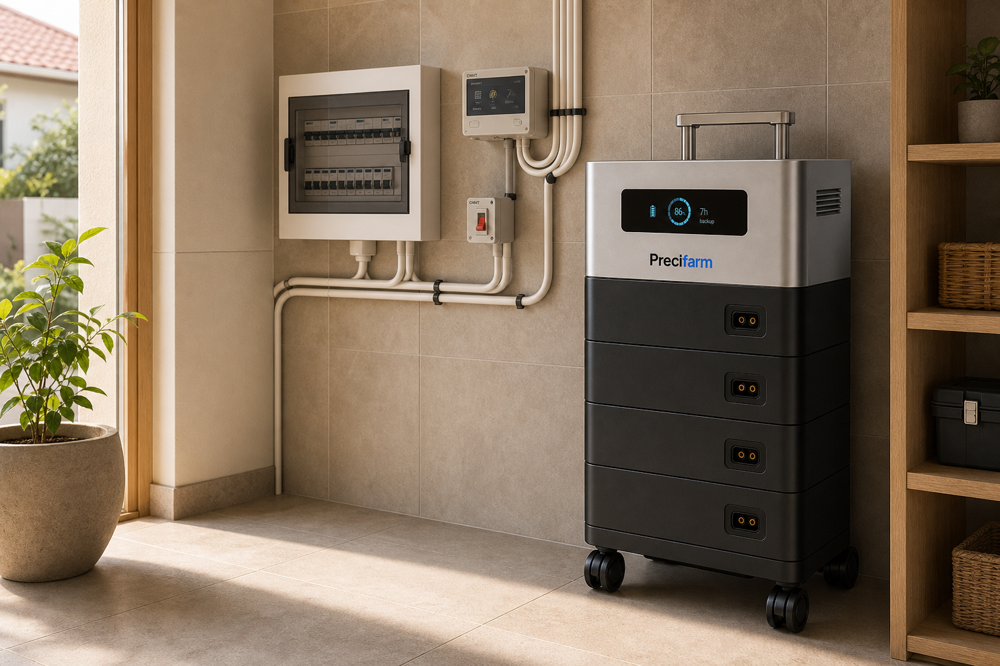
Render 6 — Urban residential installation, Nairobi. CONCEPTUAL The install context is the real design brief: a tiled utility corner, a surface-mounted consumer unit, surface conduit, and a barred security window. Consequences visible here — the unit must look acceptable in a living space, it must sit near the distribution board because the essential-load sub-board is the intervention point (§14), and a spare module must be storable without a rack.
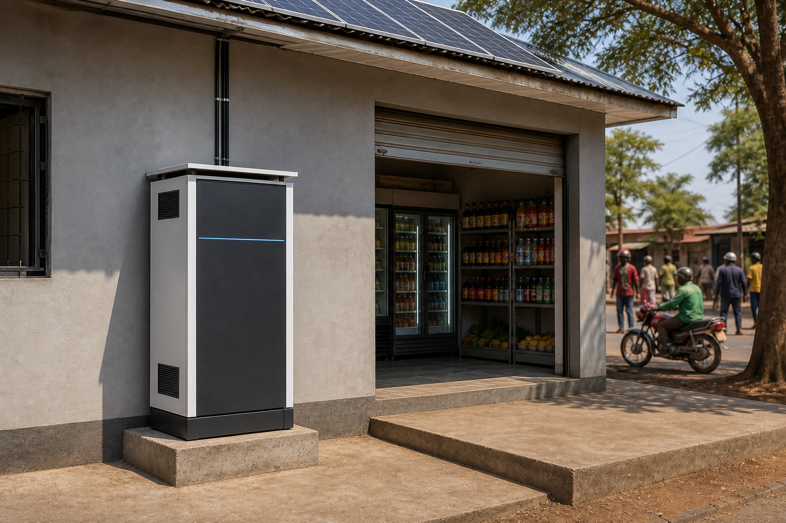
Render 7 — SME installation, peri-urban Nairobi. CONCEPTUAL For an SME the value is not tariff arbitrage — it is refrigeration that does not stop. The render shows the physical realities that drive §11 and §17.5: shaded wall placement, a raised plinth against surface water and dust, closed doors with filtered louvres, and cable entries segregated at the base.
17.2 Electrical environment
| Parameter | Value | Design consequence | Label |
|---|---|---|---|
| Voltage / frequency | 230 V, 50 Hz single-phase domestic | Type G sockets; 50 Hz inverter | BENCHMARK |
| Grid reliability | Reported average monthly outage duration ~8.4 h against a 1.5 h target | Backup is a primary function, not a bonus | BENCHMARK |
| Grid quality | Voltage sag and brownout common ASSUMPTION | Wide AC input window; brownout ride-through VALIDATE | |
| Domestic net-metering cap | 10 kW | P2 and home Pod stay well below | BENCHMARK CERT |
| C&I net-metering cap | < 1 MW | SME Pod unconstrained | BENCHMARK CERT |
| Metering for export | Bi-directional smart meter, two-way communication, time-of-use capable | Export is a project, not a switch | BENCHMARK CERT |
17.3 Cost of grid energy
| Tariff band | Base KSh/kWh | Est. all-in KSh/kWh | Label |
|---|---|---|---|
| Domestic lifeline, 0–30 kWh/month | 12.23 | ~20.1 | BENCHMARK |
| Domestic ordinary 1, 31–100 kWh/month | 16.45 | ~25.3 | BENCHMARK |
| Domestic ordinary 2, > 100 kWh/month | 19.08 | ~28.5 | BENCHMARK |
| Monthly pass-through, August 2026 | +4.70 | included above | BENCHMARK |
Product consequence: Precifarm's value proposition strengthens as household consumption rises past 100 kWh/month. Entry-tier households are served better by P1 Go and PAYGO affordability than by kWh arbitrage.
17.4 Regulatory framework
| Body | Role | What Precifarm must do |
|---|---|---|
| EPRA | Energy sector regulator; licensing; net-metering framework | Confirm licensing perimeter for storage products; net-metering applications |
| KEBS | Standards; adopts IEC as KS IEC | Product conformity: KS IEC 62619 (Li-ion), KS IEC 62109 (inverter), KS 1800 (solar home systems) |
| NEMA | Environmental approval | Scope for any assembly facility |
| Licensed contractors | Installation | All fixed installations by authorised persons |
All items [CERT]. None started.
17.5 Physical environment
| Condition | Design response |
|---|---|
| Dust | Filtered forced air with serviceable filters; sealed module bays; no unfiltered fan paths |
| Heat / solar gain | Sun shield mandatory on outdoor Pod; 50 °C internal qualification (§11) |
| Humidity (coastal) | Conformal coating on PCBs; corrosion-resistant fasteners VALIDATE |
| Rain | IP55 target for outdoor Pod enclosure CERT |
| Rodents / insects | Screened vents; sealed cable entries |
| Theft | Module serial binding to account; Energy OS alert on unexpected removal |
| Power quality | Wide AC input; brownout ride-through; surge protection |
17.6 Market and service context
| Factor | Implication |
|---|---|
| M-Pesa ubiquity | Payment and PAYGO rail already exists; no new payment infrastructure needed |
| PAYGO precedent | Instalment energy purchase is a familiar, proven consumer behaviour BENCHMARK |
| Technician availability | Module-level replacement must be teachable in days, not months |
| Spare-part logistics | One module SKU dramatically simplifies upcountry stocking |
| EV growth | Phase A EV charging is a credible near-term attach; V2X is not |
18TESLA + BYD BENCHMARK
18.1 What each company actually proved
| Tesla | BYD | |
|---|---|---|
| Core lesson | Integrated experience + software-defined energy | Repeatable module + LFP discipline |
| Storage architecture | Powerwall 3: 13.5 kWh with integrated hybrid inverter; up to 20 kW PV DC input; ~97.5 % round-trip BENCHMARK | Battery-Box: modular towers, external/compatible inverter BENCHMARK |
| Expansion model | Battery-only Expansion units share the leader inverter; up to 3 per unit → 54 kWh BENCHMARK | Add modules in series to raise voltage; HVS 2 → 5 modules = 5.12 → 12.8 kWh BENCHMARK |
| Module energy | 13.5 kWh expansion unit BENCHMARK | HVS 2.56 kWh @ 102.4 V; HVM 2.76 kWh @ 51.2 V; LVS 4.0 kWh @ 51.2 V BENCHMARK |
| Chemistry | Varies by product | Cobalt-free LiFePO₄ throughout BENCHMARK |
| Certification posture | Regional | VDE 2510-50 / IEC 62619 / CE / CEC / UN 38.3 BENCHMARK |
| Environmental | −20 °C to +50 °C class | −10 °C to +50 °C, IP55 BENCHMARK |
| Software | App, OTA, energy segment as high-margin business | Battery management unit; inverter-partner ecosystem |
18.2 The single most important finding
Precifarm's target module energy (2.56 kWh) is identical to BYD's Battery-Box HVS module energy — but at half the voltage.
| BYD HVS module | Precifarm module TARGET | |
|---|---|---|
| Energy | 2.56 kWh | 2.56 kWh |
| Nominal voltage | 102.4 V (32s) | 51.2 V (16s) |
| Scaling method | Series to 512 V | Parallel at 51.2 V (v1.0) |
| Max output current | 25 A per tower | 50 A per module |
Interpretation. BYD chose a higher module voltage specifically so that series stacking raises system voltage while holding current low. Precifarm's 51.2 V module is the right choice for P1/P2 (low-voltage safety, simple electronics, third-party 48 V inverter compatibility) but inherits a scaling ceiling at Pod scale. This is the evidentiary basis for ERN-03 and the dual LV-48 / HV-S architecture in §7.2.
18.3 The synthesis
TESLA EXPERIENCE BYD REPETITION AFRICAN ENERGY REALITY
───────────────── ────────────── ──────────────────────
integrated system + one repeated module + M-Pesa settlement
software-defined LFP safety discipline PAYGO affordability
battery-only expansion series voltage scaling weak grid, 8+ h outages
OTA field fixes cost through repetition heat, dust, soiling
one app, one account certification rigour repair, not replace
║
▼
P R E C I F A R M
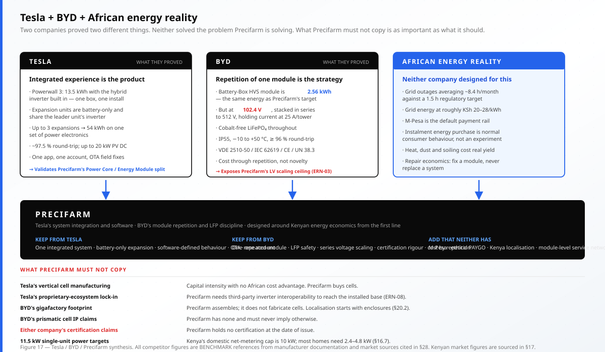
18.4 What Precifarm must NOT copy
| Do not copy | Why |
|---|---|
| Tesla's vertical cell manufacturing | Capital intensity with no African cost advantage |
| Tesla's proprietary-ecosystem lock-in | Precifarm needs third-party inverter interoperability to reach installed base (ERN-08) |
| Tesla's autonomy/robotaxi narrative | Irrelevant to energy storage; damages credibility |
| BYD's gigafactory footprint | Precifarm assembles; it does not fabricate cells |
| BYD's prismatic cell IP claims | Precifarm has none and must never imply it |
| Either company's certification claims | Precifarm holds no certification |
| 11.5 kW single-unit power targets | Kenyan domestic net-metering cap is 10 kW; most homes need 2.4–4.8 kW |
19COMPETITIVE LANDSCAPE
19.1 Position matrix
ADVANTAGE = defensible Precifarm edge · PARITY = comparable · GAP = competitor is ahead · OPPORTUNITY = unserved space Precifarm could take
| Dimension | Tesla | BYD | EcoFlow | Bluetti | Jackery | Sungrow | Huawei | Precifarm position |
|---|---|---|---|---|---|---|---|---|
| Portable entry point | ✗ | ✗ | ✓✓ | ✓✓ | ✓✓ | ✗ | ✗ | GAP vs portable brands |
| Modular home storage | ✓✓ | ✓✓ | ✓ | ✓ | ✗ | ✓✓ | ✓✓ | GAP — they ship, we concept |
| Commercial scale | ✓✓ | ✓✓ | ✗ | ✗ | ✗ | ✓✓ | ✓✓ | GAP |
| One module across portable→installed | ✗ | ✗ | ✗ | ✗ | ✗ | ✗ | ✗ | OPPORTUNITY |
| Energy software / app | ✓✓ | ✓ | ✓ | ✓ | ✓ | ✓ | ✓✓ | PARITY achievable |
| Solar integration | ✓✓ | ✓ | ✓ | ✓ | ✓ | ✓✓ | ✓✓ | PARITY |
| EV integration | ✓✓ | ✓✓ | ✓ | ✗ | ✗ | ✓ | ✓ | GAP (Phase A only) |
| PAYGO / instalment energy | ✗ | ✗ | ✗ | ✗ | ✗ | ✗ | ✗ | ADVANTAGE |
| M-Pesa native settlement | ✗ | ✗ | ✗ | ✗ | ✗ | ✗ | ✗ | ADVANTAGE |
| Kenya localisation (tariff, PSH, KEBS, install) | ✗ | ✗ | ✗ | ✗ | ✗ | ✗ | ✗ | ADVANTAGE |
| Local service network | ✗ | Dealer | Retail | Retail | Retail | Dealer | Dealer | ADVANTAGE (potential) |
| Local assembly pathway | ✗ | Regional | ✗ | ✗ | ✗ | ✗ | ✗ | OPPORTUNITY |
| Certification held | ✓✓ | ✓✓ | ✓✓ | ✓✓ | ✓✓ | ✓✓ | ✓✓ | GAP — none held |
| Manufacturing scale / unit cost | ✓✓ | ✓✓ | ✓✓ | ✓ | ✓ | ✓✓ | ✓✓ | GAP |
| Proven field reliability | ✓✓ | ✓✓ | ✓ | ✓ | ✓ | ✓✓ | ✓✓ | GAP — zero field hours |
19.2 Honest reading
Precifarm's advantages are not in cells, power electronics or manufacturing cost — all of which are GAPs against every listed competitor. They are in distribution, finance, localisation and service: the layer around the hardware.
Strategic conclusion: compete on the system and experience, buy the commodity, and treat certification and field reliability as the two GAPs that must be closed before any volume claim.
19.3 Portable-class benchmark detail
| Spec | EcoFlow DELTA 3 Plus BENCHMARK | Anker SOLIX C1000 BENCHMARK | Precifarm P1 Go [TARGET] |
|---|---|---|---|
| Energy | 1,024 Wh | 1,056 Wh | ~1,000 Wh |
| Expandable to | 5,120 Wh | 2,112 Wh (Gen 1) | Not in Phase 1 |
| Continuous AC | 1,800 W | 1,800 W | 1,000 W |
| Surge | 3,600 W | 2,400 W | 2,000 W |
| Chemistry | LiFePO₄ | LiFePO₄ | LiFePO₄ |
| Cycle life | 4,000+ | 3,000+ | ≥ 3,000 VALIDATE |
| UPS transfer | 10 ms | 20 ms | ≤ 20 ms VALIDATE |
| Mass | 12.5 kg | 11.3 kg | ≤ 12 kg |
ENGINEERING REVIEW NOTE. P1 Go's 1.0 kW output is materially below the 1.8 kW class norm. This is only defensible if it delivers a meaningful Kenyan landed-price advantage. Otherwise P1 is a weaker product at a similar price. Decision E-06 (§25).
20MANUFACTURING
20.1 Buy / Customize / Own
| BUY — commodity, multi-source | CUSTOMIZE — Precifarm mechanical + integration | OWN — defensible |
|---|---|---|
| LiFePO₄ cells | Module enclosure and compression frame | Energy OS platform |
| BMS hardware platform | P2 chassis, wheels, handle | CAN object model and DBC |
| Contactors, fuses, pre-charge | Pod rack and cabinet | PAYGO engine and policy |
| Inverter / MPPT power stages | Thermal paths, ducting, shields | Diagnostics and fault-code system |
| Connectors and contacts | Harnesses and busbars | Service platform and workflows |
| Displays, radios, MCUs | Connector housings and keying | Customer account and data |
| Sheet metal, plastics | Installation kit and mounting | Modular product architecture |
| Sensors | Labelling and service access | The customer energy experience |
20.2 Manufacturing roadmap
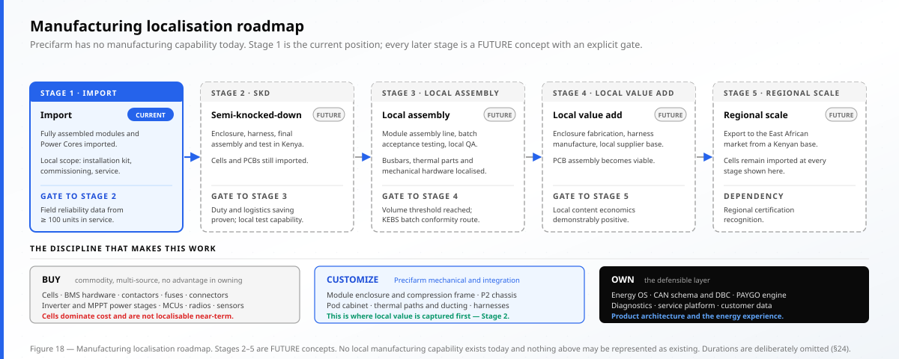
| Stage | Content | Gate to next stage | Status |
|---|---|---|---|
| 1 — Import | Fully assembled modules and Power Cores imported | Field reliability data from ≥ 100 units | Current position |
| 2 — SKD | Enclosure, harness, final assembly and test in Kenya; cells and PCBs imported | Duty/logistics saving proven; local test capability | FUTURE |
| 3 — Local assembly | Module assembly line, batch acceptance testing, local QA | Volume ≥ threshold; KEBS batch conformity route | FUTURE |
| 4 — Local value add | Enclosure fabrication, harness manufacture, local supplier base | Local content economics positive | FUTURE |
| 5 — Regional scale | Export to East African market | Regional certification recognition | FUTURE |
Precifarm has no manufacturing capability today. Nothing above may be represented as existing.
20.3 Conceptual BOM logic
| No. | Item | Buy/Cust/Own | Cost driver | Supply risk | Localisation potential |
|---|---|---|---|---|---|
| 1 | LiFePO₄ cells (16s) | Buy | Dominant — largest single cost | High — concentrated supply, FX exposure | None (Phase 1–4) |
| 2 | BMS PCB + firmware | Buy HW / Own FW | Medium | Medium | PCB assembly at Stage 4 |
| 3 | Contactor | Buy | Medium | Medium — qualification lead time | None |
| 4 | DC fuse | Buy | Low | Low | None |
| 5 | Pre-charge assembly | Buy | Low | Low | None |
| 6 | Busbars / interconnects | Customize | Low–Medium | Low | High — Stage 3 |
| 7 | Module enclosure | Customize | Medium | Low | High — Stage 2 |
| 8 | Connectors (power + CAN) | Buy | Medium | High — reliability-critical, single-source risk | None |
| 9 | Inverter power stage | Buy | High | High — supplier dependency | None |
| 10 | MPPT | Buy | Medium | Medium | None |
| 11 | Edge controller / MCU | Buy | Low | Medium — obsolescence | None |
| 12 | Radios (Wi-Fi / BLE / LTE) | Buy | Low | Medium — certification per region | None |
| 13 | Sensors (NTC, shunt) | Buy | Low | Low | None |
| 14 | Thermal (fans, filters, TIM) | Buy + Customize | Low | Low | High — Stage 3 |
| 15 | Mechanical hardware | Buy | Low | Low | High — Stage 2 |
| 16 | P2 chassis / Pod cabinet | Customize | Medium | Low | High — Stage 2 |
| 17 | Wheels, handle, latches | Buy + Customize | Low | Low | High |
| 18 | Install kit | Customize | Low | Low | High — Stage 1 |
Three structural conclusions: cells dominate cost and are not localisable near-term; connectors and the inverter stage are the highest supply risks; enclosure, thermal and installation are where local value can be captured first.
21SERVICEABILITY
21.1 Design principle
African operating economics do not tolerate whole-system swap-outs. Every serviceable element must be replaceable by a trained technician with a hand tool, a phone and a spare module.
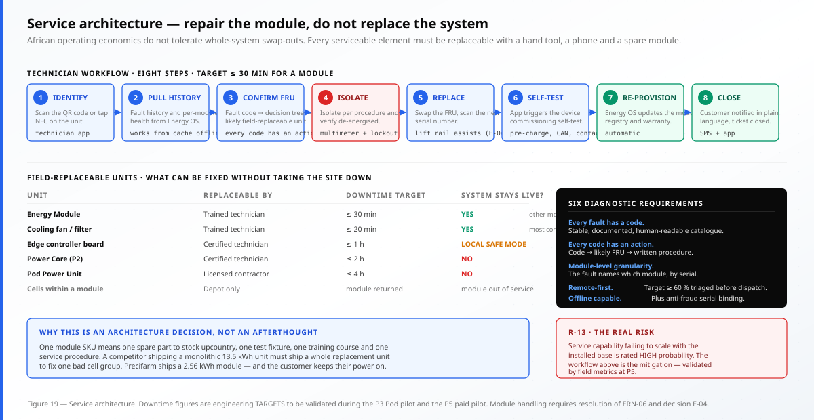
21.2 Field-replaceable units
| FRU | Replaceable by | Downtime target TARGET | System stays live? |
|---|---|---|---|
| Energy Module | Trained technician | ≤ 30 min | Yes — other modules carry load |
| Cooling fan / filter | Trained technician | ≤ 20 min | Yes |
| Power Core (P2) | Certified technician | ≤ 2 h | No |
| Pod Power Unit | Licensed contractor | ≤ 4 h | No |
| Edge controller board | Certified technician | ≤ 1 h | Local safe mode |
| Cells within a module | Depot only | — | Module returned |
21.3 Technician workflow
| Step | Action | Tool |
|---|---|---|
| 1 | Scan QR / tap NFC on unit | Precifarm technician app |
| 2 | Pull fault history and module-level SOH from Energy OS | App (works offline from cached record) |
| 3 | Confirm suspect FRU against fault-code decision tree | App |
| 4 | Isolate per procedure; verify de-energised | Multimeter, lockout |
| 5 | Replace FRU; scan new serial | App |
| 6 | Run commissioning self-test | App triggers device test |
| 7 | Energy OS re-provisions; warranty and account updated | Automatic |
| 8 | Customer notified in plain language | SMS + app |
21.4 Diagnostics requirements
| Requirement | Detail |
|---|---|
| Every fault has a code | Stable, documented, human-readable fault catalogue |
| Every code has an action | Decision tree maps code → likely FRU → procedure |
| Module-level granularity | Fault must identify which module, by serial |
| Remote-first | ≥ 60 % of faults triaged remotely before dispatch TARGET |
| Offline capable | Technician app functions without connectivity |
| Anti-fraud | Module serial bound to account; unexpected serial raises alert |
22PAYGO + M-PESA
22.1 Architecture
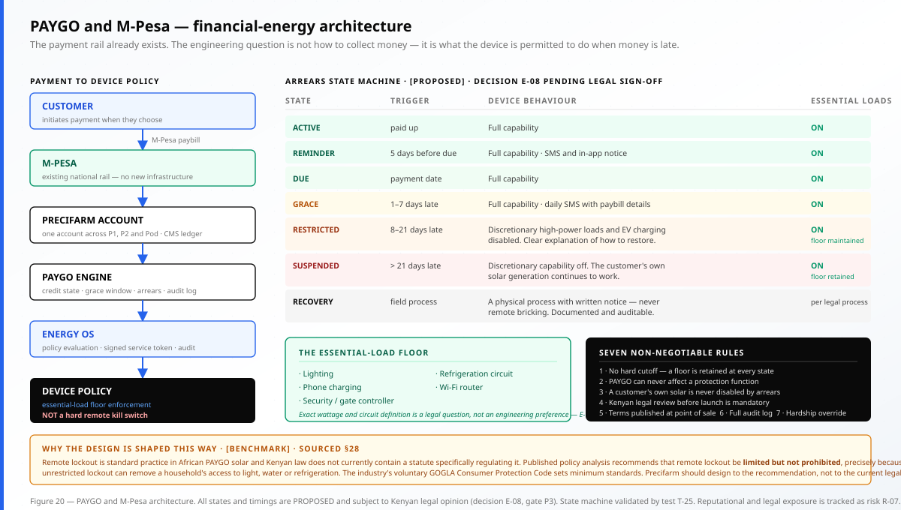
CUSTOMER │ M-Pesa payment ▼ PRECIFARM ACCOUNT ── reconciliation ──► CMS / ledger │ ▼ PAYGO ENGINE ── credit state, grace, arrears │ ▼ ENERGY OS ── policy evaluation, audit log │ ▼ DEVICE POLICY ── essential-load floor enforcement (NOT a hard kill switch)
22.2 The ethical and legal constraint
Remote lockout technology is standard practice in African PAYGO solar, and Kenyan law does not currently contain a statute specifically regulating it BENCHMARK. Academic and policy analysis recommends that remote lockout be limited but not prohibited, precisely because unrestricted lockout can remove access to light, water or refrigeration BENCHMARK. The industry's voluntary GOGLA Consumer Protection Code sets minimum consumer-protection standards BENCHMARK.
Design implication: Precifarm should not build a hard remote kill switch for a product that may be a household's only source of light or refrigeration.
22.3 PAYGO policy design [PROPOSED]
| State | Trigger | Device behaviour | Customer communication |
|---|---|---|---|
| Active | Paid up | Full capability | Normal |
| Reminder | 5 days before due | Full capability | SMS + in-app |
| Due | Payment date | Full capability | SMS + in-app |
| Grace | 1–7 days late | Full capability | Daily SMS with paybill |
| Restricted | 8–21 days late | Essential-load floor maintained: lighting, phone charging, router, refrigeration circuit remain powered; discretionary high-power loads and EV charging disabled | Clear explanation + how to restore |
| Suspended | > 21 days late | Discretionary capability off; essential-load floor retained; solar self-consumption still permitted | Written notice + resolution path |
| Recovery | Field process | Physical process with notice, not remote bricking | Documented, auditable |
22.4 Non-negotiable rules
| Rule | Requirement |
|---|---|
| No hard cutoff | An essential-load floor is retained at every arrears state |
| Safety never gated | PAYGO state can never affect a protection function or safe shutdown |
| Solar never blocked | A customer's own solar generation is not disabled by arrears |
| Legal review mandatory | Policy reviewed under Kenyan consumer-credit and data-protection law before launch [CERT-adjacent] |
| Transparency | Terms, timings and thresholds published at point of sale |
| Auditability | Every state change logged with actor, reason, timestamp |
| Manual override | Documented hardship override with human authorisation |
Decision E-08 (§25): exact essential-load floor definition (W and circuits) requires legal sign-off.
23TEST + VALIDATION
23.1 Test matrix
| ID | Test | Level | Certified lab? | Gate |
|---|---|---|---|---|
| T-01 | Capacity verification (0.2 C / 0.5 C / 1.0 C) | Module | No | P0 |
| T-02 | Cycle life (≥ 4,000 to 80 % SOH) | Cell + module | Partial | P1 → ongoing |
| T-03 | Thermal chamber: −5 / 25 / 40 / 50 °C with derating verification | Module + Power Core | No | P1 |
| T-04 | Overcharge abuse | Module | Yes — IEC 62619 | P4 |
| T-05 | Over-discharge abuse | Module | Yes — IEC 62619 | P4 |
| T-06 | External short circuit | Module | Yes — IEC 62619 | P4 |
| T-07 | Thermal abuse / propagation | Module | Yes — IEC 62619 | P4 |
| T-08 | Crush / mechanical abuse | Module | Yes — IEC 62619 | P4 |
| T-09 | Transport tests (altitude, thermal, vibration, shock, impact) | Module | Yes — UN 38.3 | P4 |
| T-10 | Contactor endurance + weld detection | Module | No | P1 |
| T-11 | Pre-charge sequence and fault timeout | Module | No | P0 |
| T-12 | CAN bus integrity, loss and recovery | System | No | P1 |
| T-13 | Third-party inverter interoperability | System | No | P2 |
| T-14 | EMC emissions and immunity | System | Yes — IEC 61000 | P4 |
| T-15 | Ingress protection (IP21 / IP55) | Enclosure | Yes | P4 |
| T-16 | Dust exposure, filtered airflow degradation | System | No | P2 |
| T-17 | Mechanical vibration (transport simulation) | Module + product | Partial | P3 |
| T-18 | Drop test (P1 portable class) | P1 | Yes — IEC 62368-1 | P4 |
| T-19 | Communications loss behaviour (offline autonomy) | System | No | P1 |
| T-20 | Grid outage / backup transition timing | System | No | P2 |
| T-21 | Solar charging across irradiance profile | System | No | P2 |
| T-22 | Inverter overload and surge (motor start) | System | No | P2 |
| T-23 | Anti-islanding and grid protection | System | Yes — IEC 62109 | P4 |
| T-24 | OTA update, rollback and failure injection | System | No | P2 |
| T-25 | PAYGO state machine, including essential-load floor | System | No | P3 |
| T-26 | Module hot-swap under load | System | No | P2 |
| T-27 | Insulation resistance / hi-pot (production) | Module | No (in-line) | P3 |
| T-28 | Round-trip efficiency verification vs A-02 / A-03 | System | No | P2 |
Nine tests require certified laboratories (T-04 to T-09, T-14, T-15, T-18, T-23). Lab engagement is the long-lead item in the programme and should begin at P2, not P4.
23.2 Validation of stated assumptions
| Assumption | Validated by |
|---|---|
| A-01 usable SOC window 90 % | T-01, T-02 |
| A-02 conversion efficiency 94 % | T-28 |
| A-03 round-trip 90 % | T-28 |
| A-07 PV yield 3.5 kWh/kWp/day | Field monitoring, 12 months, ≥ 3 sites |
| A-09 internal resistance 12 mΩ | T-01, T-03 |
| Derating table (§11.4) | T-03 |
| Module mass ≤ 30 kg (ERN-06) | P0 physical build |
24PROTOTYPE ROADMAP
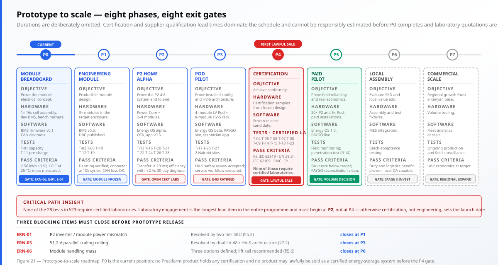
| Phase | Objective | Hardware | Software | Tests | Pass criteria | Exit gate |
|---|---|---|---|---|---|---|
| P0 Module breadboard | Prove module electrical concept | 1× 16s cell assembly, dev BMS, bench harness | BMS firmware v0.1, CAN dev tools | T-01, T-11 | E = 2.56 kWh ±3 %; 1.0 C sustained at 25 °C; pre-charge deterministic; mass measured | ERN-06 and E-01 closed |
| P1 Engineering module | Producible module design | 3× modules in target enclosure | BMS v0.5, DBC published | T-02 start, T-03, T-10, T-12, T-19 | Derating table verified; contactor endurance ≥ 10k cycles; CAN loss handled | Module design frozen |
| P2 P2 Home alpha | Prove P2-4.8 system | Power Core + 2–4 modules | Energy OS alpha, OTA, app v0.5 | T-13, T-16, T-20, T-21, T-22, T-24, T-26, T-28 | Backup transfer ≤ 20 ms; efficiency within 2 % of A-02; 30-day internal dogfood no critical faults | Certified-lab engagement opened |
| P3 Pod pilot | Prove installed configuration and HV-S | 4-module LV Pod + 8-module HV-S rack, 2 Nairobi sites | Energy OS beta, PAYGO simulation, technician app | T-17, T-25, T-27 | Commissioning sheet passed; HV-S safety review accepted; service workflow executed | E-03 architecture decision ratified |
| P4 Certification | Achieve conformity | Certification samples | Frozen release candidate | T-04–T-09, T-14, T-15, T-18, T-23 | KS IEC 62619, UN 38.3, IEC 62109, EMC, IP achieved | First lawful sale possible |
| P5 Paid pilot | Prove field reliability and economics | 20× P2, 5× Pod paid installs | Energy OS 1.0, PAYGO live | Field monitoring | Fault rate below target; PAYGO reconciliation clean; NPS measured | Volume decision |
| P6 Local assembly | Evaluate SKD/local value | Assembly and test fixtures | MES integration | Batch acceptance | Duty/logistics benefit proven; local QA capable | Stage 3 investment |
| P7 Commercial scale | Regional growth | Volume tooling | Fleet analytics at scale | Ongoing | Unit economics at target | Regional expansion |
Durations are deliberately omitted. Certification and supplier qualification lead times dominate and cannot be responsibly estimated before P0 completes and lab quotations are held.
25OPEN ENGINEERING DECISIONS
25.1 Engineering Review Notes against v1.0
| ID | Finding | Severity | Resolution in v2.0 | Section |
|---|---|---|---|---|
| ERN-01 | 4 kW P2 inverter paired with a single 2.56 kW module — requires 1.66 C | Blocking | Two-tier SKU: P2-2.4 (1 module) and P2-4.8 (2+ modules), firmware-enforced | §5.2 |
| ERN-02 | Module DC power stated as "≈2.5 kW"; arithmetic gives 2.56 kW | Editorial | Corrected; derivation shown | §3.3 |
| ERN-03 | 51.2 V parallel scaling to 20 modules implies ~1,000 A DC bus | Blocking | Dual architecture: LV-48 ≤ 4 modules; HV-S series ≥ 5 modules | §7.2 |
| ERN-04 | 2.0 kWp PV input exceeds single-module 1.54 kW charge acceptance | Moderate | Firmware charge clamp + load-first dispatch; 2 modules for 2.0 kWp | §5.4 |
| ERN-05 | Cross-product module transfer implied but not architecturally guaranteed | Moderate | Contingent on E-03; marketing restricted until closed | §2.2 |
| ERN-06 | Module mass (~38 kg benchmark class) exceeds single-person lifting guidance | Blocking | Three options defined; recommendation is integrated lift rail | §5.6 |
| ERN-07 | Thermal envelope 15–40 °C understates sun-exposed outdoor case | Moderate | Revised to −5 to +50 °C with published derating table | §11.1, §11.4 |
| ERN-08 | Proprietary-only CAN; 500 V isolation inadequate for HV string | Moderate | Third-party profile mandated; isolation tied to architecture | §8.3, §7.2 |
| ERN-09 | Usable energy never defined; nominal quoted as if usable | Moderate | Four-figure definition adopted platform-wide | §10.2, §16.3 |
25.2 Decision register
| ID | Decision | Options | Current preference | Why | Data required | Gate |
|---|---|---|---|---|---|---|
| E-01 | Cell format | Prismatic / cylindrical | Prismatic | Higher volumetric efficiency, simpler busbar, benchmark precedent | Supplier quotes ×3, 1.0 C @ 40 °C data | P0 exit |
| E-02 | Module cooling in Pod | Passive / forced filtered air | Forced filtered air | Density and outdoor solar gain | T-03, T-16 | P1 |
| E-03 | Pod battery architecture | LV-48 parallel / HV-S series / both | Both (LV ≤4, HV-S ≥5) | Current reduction 10× at 51.2 kWh; benchmark precedent | HV-S safety review, cert scoping, cost delta | P3 — highest priority |
| E-04 | Module handling | Two-person / half-module / lift rail | Lift rail in bays | Preserves 2.56 kWh economics and single-technician service | P0 measured mass, ergonomics review | P0 exit |
| E-05 | Grid export default | Zero-export / limited export | Zero-export default | Net metering is a per-site consent process, not a product feature | EPRA/KPLC process confirmation | P2 |
| E-06 | P1 Go power rating | 1.0 kW / 1.5 kW | Open | 1.0 kW is below class norm; only viable on clear price advantage | Landed-cost model vs benchmark retail | P1 |
| E-07 | Third-party inverter CAN profile | Which profile(s) to emulate | Open | Determines addressable installed base | Kenyan installed-inverter survey | P2 |
| E-08 | PAYGO essential-load floor | Circuits and wattage | Open | Requires legal position, not engineering preference | Kenyan legal opinion | P3 |
| E-09 | Connectivity SKU | Wi-Fi only / Wi-Fi + LTE | Wi-Fi + optional LTE | Home Wi-Fi unreliable; Pod needs assured link | Connectivity study, data cost model | P2 |
| E-10 | Mounting | Wall / floor / wheeled | Wheeled P2, floor Pod | Mass and expansion bays preclude wall mount | ERN-06 outcome | P1 |
| E-11 | Power conversion | Single inverter / modular PCS | Single per SKU tier | Complexity and cost at this scale | Supplier shortlist | P2 |
| E-12 | Warranty term | 5 / 10 years | Open | Must follow measured cycle life, not marketing | T-02 interim data | P4 |
26POWER VERSUS ENERGY
This section exists because conflating kWh and kW is the single most common cause of mis-sold residential storage.
26.1 The analogy
ENERGY = TANK SIZE (kWh) how much you have
POWER = PIPE SIZE (kW) how fast you can use it
A bigger tank does not make water come out faster. Adding Energy Modules does not increase AC output power.
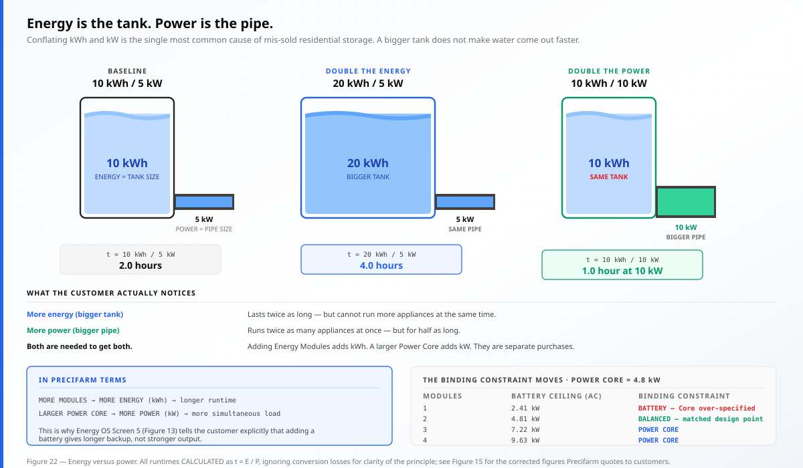
26.2 Worked comparison
| Configuration | Energy | Power | Runtime at 5 kW | What the customer notices |
|---|---|---|---|---|
| 10 kWh / 5 kW | 10 kWh | 5 kW | 2.0 h CALC | Baseline |
| 20 kWh / 5 kW | 20 kWh | 5 kW | 4.0 h CALC | Lasts twice as long; cannot run more appliances at once |
| 10 kWh / 10 kW | 10 kWh | 10 kW | 1.0 h at 10 kW CALC | Runs twice as many appliances; for half as long |
26.3 In Precifarm terms
MORE MODULES → MORE ENERGY (kWh) → longer runtime LARGER POWER CORE → MORE POWER (kW) → more simultaneous load Both are required to increase both.
The binding constraint changes with module count:
| Modules | Battery power ceiling (AC) | If Power Core is 4.8 kW | Binding constraint |
|---|---|---|---|
| 1 | 2.41 kW | Power Core over-specified | Battery |
| 2 | 4.81 kW | Matched | Balanced |
| 3 | 7.22 kW | Power Core limits | Power Core |
| 4 | 9.63 kW | Power Core limits | Power Core |
This table is the practical output of ERN-01 and should drive the sizing tool logic directly.
27APPENDIX: CALCULATION REFERENCE
27.1 Equation set
| Quantity | Equation | Units |
|---|---|---|
| Energy | E = V × Ah | Wh |
| Power | P = V × I | W |
| C-rate | C = I / Ah | 1/h |
| Runtime | t = E_usable / P_load | h |
| Usable energy | E_usable = E_nom × SOC_window × η | Wh |
| Cycling energy | E_cycle = E_nom × (window − reserve) × η | Wh |
| Module count | N = CEILING(E_required / E_module_effective) | — |
| Solar array | P_solar = E_daily / (yield × η_path) | kWp |
| PV generation | E_PV = P_array × PSH × PR | kWh |
| Ohmic loss | P_loss = I² × R | W |
| Converter loss | P_loss = P_out × (1/η − 1) | W |
| Series string | V_string = N × V_module, Ah unchanged | V |
| Parallel bank | Ah_bank = N × Ah_module, V unchanged | Ah |
27.2 Reference value table
| Quantity | Value |
|---|---|
| Module nominal energy | 2.56 kWh |
| Module usable AC energy | 2.17 kWh |
| Module daily cycling AC energy | 1.68 kWh |
| Module max continuous DC power | 2.56 kW |
| Module max continuous AC power | 2.41 kW |
| Module max charge power | 1.54 kW |
| Module discharge C-rate | 1.00 C |
| Module charge C-rate | 0.60 C |
| Module ohmic loss at 1.0 C | 30 W |
| PV yield basis | 3.5 kWh/kWp/day |
27.3 What these equations deliberately omit
Real system design must additionally consider: cell temperature history and calendar ageing; actual depth-of-discharge distribution; inverter efficiency curve versus load (not a single figure); battery ageing over the warranty term; reserve policy interaction with outage statistics; inverter surge and motor-start behaviour; solar variability and soiling rate; the customer's real load profile rather than a daily total; site electrical constraints; and statutory export limits.
No sizing tool should present a single-number answer without a sensitivity range.
28RISK REGISTER
| ID | Risk | Impact | Probability | Mitigation | Validation method |
|---|---|---|---|---|---|
| R-01 | Thermal derating in sun-exposed installs reduces delivered capability below quoted figures | High | High | Mandatory sun shield; 50 °C qualification; published derating; install guidance | T-03, T-16, field monitoring |
| R-02 | LFP cell supply concentration and FX exposure | High | High | ≥ 2 qualified suppliers before P4; FX-aware pricing | Supplier audit, dual-source qualification |
| R-03 | Certification timeline exceeds commercial plan | High | Medium | Engage certified labs at P2; pre-compliance testing | Lab quotations, pre-compliance results |
| R-04 | Inverter/power-stage supplier dependency | High | Medium | Shortlist ≥ 2; abstract firmware interface | Supplier qualification, T-13 |
| R-05 | BMS reliability — field failure of protection function | Critical | Low | Independent review; redundant protection paths; T-04–T-08 | Certified abuse testing |
| R-06 | Connector reliability under repeated hot-swap and dust | High | Medium | Qualified connector, mating-cycle test, sealed bays | T-26, T-16, mating-cycle test |
| R-07 | PAYGO reputational or legal exposure from lockout | High | Medium | Essential-load floor; legal review; GOGLA-aligned transparency | Legal opinion, T-25 |
| R-08 | Grid-compliance failure (anti-islanding, export) | High | Medium | Design to KS IEC 62109; licensed installers; zero-export default | T-23, per-site sign-off |
| R-09 | HV-S architecture introduces unbudgeted certification and installer cost | High | High | Scope HV-S cert at P3 before commitment | Cert consultant scoping, cost model |
| R-10 | EV interoperability disappoints customers expecting V2X | Medium | Medium | Strict Phase A-only messaging; no V2X claims | Marketing review gate |
| R-11 | Water ingress in outdoor Pod | High | Medium | IP55 target; drip loops; commissioning check | T-15, install audit |
| R-12 | Dust degrades filtered airflow, causing progressive derating | Medium | High | Serviceable filters; Energy OS derate-trend alert | T-16, fleet analytics |
| R-13 | Service capability does not scale with installed base | High | High | Module-level FRU design; technician app; ≥60 % remote triage | P5 field metrics |
| R-14 | Cybersecurity — unauthorised command or telemetry exposure | High | Medium | Signed OTA; no cloud override of limits; least-privilege; data-protection compliance | Penetration test before P5 |
| R-15 | Component obsolescence (MCU, radio) mid-lifecycle | Medium | Medium | Second-source at design; abstraction layer; lifecycle monitoring | Supplier lifecycle statements |
| R-16 | Module mass causes injury or damage in field | Medium | Medium | E-04 resolution; documented handling; lift aid | Ergonomics review, incident tracking |
| R-17 | Assumed efficiency figures (A-02, A-03) not achieved, invalidating all sizing | High | Medium | Early T-28; publish measured values; update sizing tool | T-28 |
| R-18 | Theft of modules from installed systems | Medium | Medium | Serial-account binding; removal alerts; physical locking | Field pilot data |
29NORTH STAR
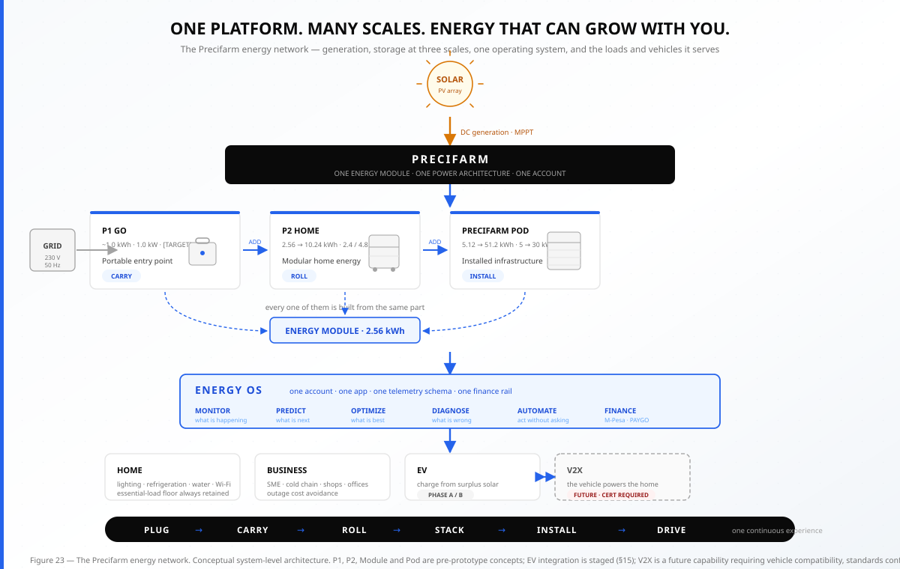
SOLAR
↓
PRECIFARM
↓
P1 GO → P2 HOME → ENERGY MODULES → POD
↓
ENERGY OS
↓
HOME · BUSINESS · EV
↕
V2X
PLUG → CARRY → ROLL → STACK → INSTALL → DRIVE
30RESEARCH + DESIGN REFERENCES
30.1 Benchmark products
- Tesla Powerwall 3 — DC system sizing and inverter architecture. Tesla Energy Library. https://energylibrary.tesla.com/docs/Public/EnergyStorage/Powerwall/3/SystemDesign/en-us/GUID-E43D0BF8-6B91-469A-813A-C3EFC27D87DB.html
- Tesla Powerwall 3 — capacity, continuous output, round-trip efficiency, Expansion unit behaviour. Solar Electric Supply product documentation. https://www.solarelectricsupply.com/solar-battery-backup-systems/tesla-powerwall-3-battery-storage-system-review
- Tesla Powerwall 3 — expansion to 54 kWh, integrated inverter. Infinity Energy. https://www.infinity-energy.co.uk/residential/battery-storage/tesla-powerwall-3/
- BYD Battery-Box Premium HVS — datasheet (2.56 kWh module @ 102.4 V, series scaling to 512 V, 25 A output, IP55, IEC 62619 / UN 38.3 / VDE 2510-50). BYD. https://bydbatterybox.com/uploads/downloads/241212_Datasheet_Battery-Box%20HVS_V1.4_EN-675a34b4e7bfb.pdf
- BYD Battery-Box Premium HVS / HVM — datasheet (HVM 2.76 kWh @ 51.2 V, parallel tower scaling). BYD. https://www.bydbatterybox.com/uploads/downloads/220426%20BYD%20Battery-Box%20Premium%20HVS_HVM%20Datasheet%20V1.6%20EN-626901613c1a0.pdf
- BYD Battery-Box Premium LVS — datasheet (4 kWh @ 51.2 V modules, parallel to 256 kWh, rated DC power by module count). BYD. https://www.bydbatterybox.com/uploads/downloads/BYD%20Battery-Box%20Premium%20LVS%20Datasheet%20-AU%20V2.1-6262722fe7f17.pdf
- BYD Battery-Box range review — LFP chemistry rationale, BMU architecture. Clean Energy Reviews. https://www.cleanenergyreviews.info/blog/byd-battery-review
- EcoFlow DELTA 3 Plus vs Anker SOLIX C1000 — portable-class specifications, expandability, UPS transfer, cycle life. Solar Waypoint. https://www.solarwaypoint.com/ecoflow-delta-3-plus-vs-anker-solix-c1000/
- Anker SOLIX C1000 Gen 2 / Bluetti Elite 100 V2 / EcoFlow DELTA 3 Plus comparison — mass, output, chemistry. Solar Waypoint. https://www.solarwaypoint.com/compare-power-stations/anker-solix-c1000-gen2-vs-bluetti-elite-100-v2-vs-ecoflow-delta-3-plus/
- Portable power station expansion architectures — EcoFlow and Anker modular ceilings. Outdoor Tech Lab. https://www.outdoortechlab.com/ecoflow-vs-anker-power-station/
30.2 Standards and certification
- KEBS solar and storage equipment standards — KS IEC 61215, KS IEC 61730, KS IEC 62109, KS IEC 62619, KS 1800. SurgePV Kenya compliance guide. https://www.surgepv.com/solar-compliance/kenya/guides/kebs-standards
- Kenya electrical regulations index — National Building Code 2025, distribution grid code, KEBS adoption practice. Electrical Engineering in Kenya. https://www.eeekenya.com/kenya-electrical-regulations/
- Kenya solar manufacturing regulatory stack — EPRA, KEBS, NEMA roles. PVKnowHow. https://www.pvknowhow.com/countries/kenya/solar-panel-production-regulations-kenya/
30.3 Kenya energy market and regulation
- The Energy (Net-Metering) Regulations, 2024 (Legal Notice 104 of 2024) — applicability below 1 MW, authorised-person installation, bi-directional smart metering requirements. https://dg-africa.net/wp-content/uploads/2025/06/The-Energy-NetMetering-Regulations-2024.pdf
- EPRA on net-metering caps — 10 kW domestic, 1 MW C&I; battery-storage framework in development. Energy News Network. https://energy-news-network.com/industry-news/powering-kenyas-clean-energy-future-insights-from-epra/
- Kenya electricity tariffs 2025/26 — domestic base rates and all-in estimates. MEP Engineering / Reigai Solutions. https://reigaisolut.co.ke/understanding-the-cost-of-electricity-in-kenya/
- EPRA gazetted pass-through charges, August 2026 — KSh 4.7027/kWh combined (FCC, FERFA, WRMA). Kenyans.co.ke. https://www.kenyans.co.ke/news/126245-epra-announces-ksh470-kwh-electricity-charges-august
- EPRA August 2026 gazette notices detail (Nos. 13172–13174). Tuko. https://www.tuko.co.ke/business-economy/energy/636593-epra-announces-electricity-charges-august-fuel-levy-water-charges-rise/
- Kenya Power tiered domestic tariff structure. Contentgenics. https://contentgenics.com/kenya-power-tiered-tariff-system/
30.4 Kenya solar resource
- Kenya peak-sun-hour design basis by city — Nairobi 5.5 annual / 4.5 worst-month / 4.7 recommended; Kisumu 5.0 / 4.0. SurgePV C&I Solar in Kenya guide. https://www.surgepv.com/solar-compliance/kenya/guides/ci-solar-kenya
- Peak sun hours by Kenyan county. Riisun Solar Energy. https://riisunsolarenergy.co.ke/average-peak-sun-hours-by-county/
- Measured performance of a 600 kWp grid-tied rooftop PV system, Strathmore University, Nairobi — 1,225 kWh/kWp/year specific yield, 57.4 % performance ratio, IEC 61724 indices. Results in Engineering. https://doi.org/10.1016/j.rineng.2023.101302
- Nairobi seasonal PV output modelling from NASA POWER data. profileSOLAR. https://profilesolar.com/locations/Kenya/Nairobi/
30.5 PAYGO, consumer protection and finance
- Remote Lockout Technology in PAYGo solar — regulatory dilemma and recommendation to limit rather than prohibit. NUS Law Research Blog. https://blog.nus.edu.sg/lawresearch/2025/11/17/remote-lockouts-in-paygo-solar-how-to-approach-the-regulatory-dilemma/
- "When the Lights Go out: Remote Lockout Technology in Sustainable Pay-As-You-Go Products." Springer. https://doi.org/10.1007/978-3-032-02983-6_9
- GOGLA Consumer Protection Code — six consumer-protection principles and assessment framework. https://gogla.org/consumer-protection-standards/consumer-protection-code/
- Kenyan PAYGO default and lockout practice, and applicable consumer-complaint routes. Paybill KE. https://paybillke.com/guides/sun-king-default-what-happens-kenya
30.6 Internal Precifarm sources
- PF-MODENERGY-001 v1.0 — Precifarm Modular Energy Storage (baseline superseded by this document).
- Modular Energy Platform — Product Design (
docs/product/modular-energy-platform.md). - PF-ENG-SOLAR-HUB-001 v1.1 — Solar Chargers & Charging Stations Engineering Design Doc.
- Precifarm CANON (
docs/CANON.md) — commercial scope boundary; consumer energy is a gated expansion surface. - Precifarm CMS install pipeline — survey-to-commissioning stage model (§13.6).
DOCUMENT CONTROL
| Version | Date | Author | Change |
|---|---|---|---|
| 1.0 | 2026-08-30 | Precifarm Engineering | Initial engineering design basis |
| 2.0 | 2026-08-30 | Precifarm Engineering | Full product + engineering architecture review. Nine Engineering Review Notes raised and resolved. Derived math for all specifications. Dual battery architecture (LV-48 / HV-S) proposed. Kenya design basis sourced. PAYGO redesigned on consumer-protection evidence. Test matrix, risk register and decision gates expanded. 27 external references added. |
Next review: at P0 exit, to close ERN-06 and decisions E-01 and E-04.
PF-MODENERGY-002 v2.0 · Precifarm Engineering · 30 August 2026
Engineering targets and conceptual designs in this document are subject to prototype validation, supplier qualification, third-party testing, certification and applicable Kenyan statutory requirements. This document is not an issued-for-construction drawing, certified product specification, warranty or installation manual. Precifarm holds no product certification at the date of issue.